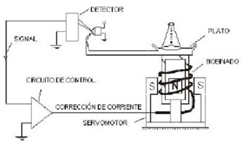
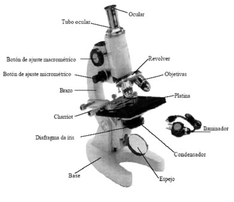
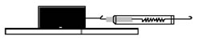
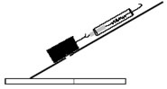
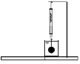
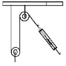
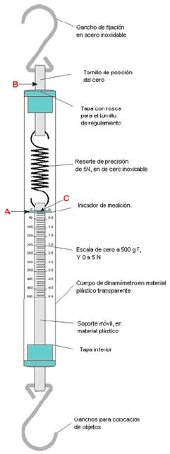
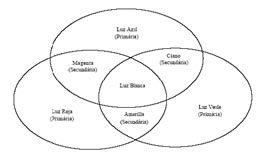
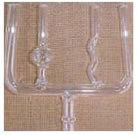
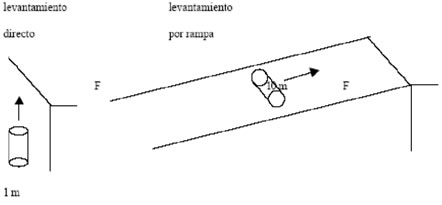

LDM
Manual de Operación
Orientaciones Metodologías y Datos Complementarios
En las últimas décadas los avances científicos se han incrementado de manera notable en todas las áreas del conocimiento científico, muy en especial en la química, física y biología. La posibilidad de poder incorporar este acervo a las dinámicas educativas es algo complejo y en ocasiones resulta menos que imposible. Uno de los factores radica, principalmente en la asimilación o gusto que los alumnos tengan por la ciencia, su desarrollo y la aplicación práctica. Por diferentes experiencias educativas de otras regiones del mundo y México, se ha observado que la utilización de herramientas pedagógicas atractivas y diseñadas para atraer la atención de los jóvenes desde edades muy tempranas, permiten incrementar sustancialmente este proceso y orientar cada vez más adeptos al ámbito científico. El Laboratorio Didáctico Móvil (LDM) constituye una herramienta educativa valiosa que permite cumplir de manera eficaz con esa premisa, ya que su diseño, orientación y modelo educativo ayudan al estudiante a introducirlo de manera amigable al fascinante mundo del quehacer científico.
El LDM se basa un modelo educativo inspirado en el constructivismo, donde el alumno construye su conocimiento de manera dinámica y participativa, adquiriendo verdaderamente un aprendizaje significativo, fortaleciendo el proceso de "aprender a aprender". En las dinámicas actuales de las sociedades de conocimiento, se requieren estructuras pedagógicas modernas capaces de establecer vínculos sólidos entre todos los componentes de un sistema educativo, por lo que es necesario contar con herramientas prácticas que permitan el desarrollo de habilidades y competencias requeridas por un entorno social y económico específico. Más allá de que el LDM cumple con los estándares internacionales pedagógicos más altos y que se adapta perfectamente a la currícula de los diferentes subsistemas de nuestro país, existe el compromiso fundamental de fomentar el desarrollo de la ciencia desde etapas básicas, por lo que su estructura permite abordar los diferentes temas de física, química y biología de una manera sencilla y objetiva, creando así una atmósfera placentera, que motivara al educando al proceso de asimilación participativa de generación del conocimiento.
El laboratorio Didáctico Móvil está integrado por:
a) Estación de trabajo contenedora Móvil.
b) Interfaz con conjunto de sensores para adquisición de datos experimentales con Computadora portátil incluida.
c) Conjunto de Física.
d) Conjunto de Química.
e) Conjunto de Biología.
f) Conjunto de manuales de experiencias prácticas.
El LDM fue diseñado para su aplicación por parte de los profesores con el fin de cubrir sus necesidades específicas de las prácticas de laboratorio incluidas en el programa curricular de acuerdo a los siguientes objetivos:
- Establecer un proceso amigable para el acercamiento a la ciencia y la construcción del conocimiento.
- Contribuir de manera eficiente al proceso de clarificación de la teoría a la práctica.
- Proveer al profesor de una herramienta integral que facilite la ejecución de la práctica de laboratorio de una manera clara y precisa.
- Desarrollara y mejorara la práctica docente
En procedimientos experimentales, particularmente en análisis cualitativos o cuantitativos, para que se obtengan resultados satisfactorios, es fundamental que el material utilizado esté limpio y seco.
Procedimientos enteros o reacciones químicas pueden ser alterados, a partir de un simple tubo de ensayo o bastón de vidrio mal lavado, comprometiendo así los resultados esperados. Aparte de eso, es común la inutilización y el desperdicio de grandes cantidades de reactivos químicos y recursos financieros como consecuencia de un trabajo descuidado.
Se debe siempre evitar, de forma meticulosa e intransigente, que sean guardados o usados vidrio sucio deteriorado o rajado. Se debe recordar que, al contrario de lo que se imagina, "la mayoría de las reacciones químicas son lentas" y, un material al ser guardado sucio, con residuos de productos químicos, probablemente, será corroído lentamente por ellos o podrán ocurrir diversas combinaciones indeseables. Después de secos, los materiales se deben guardar en lugar exento de humedad o polvo.
De manera general, para la limpieza común de los vidrios se usa una solución de agua con jabón o, preferentemente con detergente exento de colorantes. Existen casos en que la suciedad es resistente a la limpieza con agua y detergente (primeramente realizada a frío y si es necesario con agua caliente), constituyéndose muchas veces en lo que llamamos manchas, adherencias o incrustaciones. Debemos procurar retirar mecánicamente la mayor parte de la suciedad (adherencias o incrustaciones), siempre cuidando de no danificar el aparato, usando espátula, cortaplumas, destornillador, abrasivos suaves como arena fina y/o saponáceo- algunos de estos productos ya contienen cloro- antes de partir para un ataque químico del residuo. Vea en el cuadro siguiente algunas situaciones y las recomendaciones para su solución.
Situaciones y Providencias para su Solución
Situaciones Problemáticas |
Recomendaciones para su solución |
Turbidez y precipitados claros |
Primero lavar con ácido diluido y si resiste lavar con ácido concentrado usando preferentemente este orden indicado a seguir; HCl, H2SO4, HNO después del ataque ácido lavar varias veces con agua. |
Turbidez y precipitados oleosos |
Lavar con base diluida y si resiste lavar con base concentrada usando el orden a seguir: NH4OH (amoníaco), NaOH, KOH. La solución hidro-alcohólica de KOH es un desengrasante muy eficiente, pero deberá quedar poco tiempo sobre vidrios o porcelanas pues es muy agresiva. Después de este ataque básico lavar varias veces con agua. |
Residuos metálicos adherentes |
Lavar con ácido como fue indicado en el (1) y si resiste, lavar con agua regia (3HCl + 1HNO3). En último caso realizar solución salina con sulfato de potasio y nitrato de potasio, con mucho cuidado. |
Manchas de Yodo |
Se retira con solución de tiosulfato de sodio, el EDTA y sus sales también son bastante eficientes |
Manchas de nitrato de plata. |
Retira directamente con tiosulfato de sodio cuando son recientes. Las más antiguas, tratarlas con yodo y retirar en seguida con tiosulfato. |
De manera general podemos encontrar suciedades solubles en:
- Agua.
- Soluciones acuosas/ hidro alcohólicas de hidróxido de sodio o potasio.
- Ácidos; solventes orgánicos.
- Mezcla sulfocrómicas o sulfonítrica.
Así el uso de estas sustancias en el proceso de limpieza estaremos disolviendo:
- Sustancias inorgánicas (sales de metales alcalinos, acetatos, nitratos) y algunas
- Orgánicas (alcohol, acetona, glicerina sacarosa, etc.).
- Sustancias grasas u oleosas en general.
- Metales y ciertas sales insolubles en agua;
- Óleos, resinas y alquitranes.
- Sales, resinas, residuos carbonosos, alquitranes.
Con toda certeza tratándose de limpieza de una suciedad de naturaleza desconocida no existirá nunca una regla infalible, pero, tomando en cuenta los grupos de limpiadores y las sustancias a retirar, podemos proporcionar un orden recomendable para el tratamiento de limpieza como lo indica el siguiente cuadro:
Grupo de Limpiadores y Sustancias Respectivas
Limpiadores |
Sustancias |
A |
Preliminares: retirar mecánicamente la mayor parte de los residuos |
B(1) |
Lavar con agua en abundancia |
C |
Lavar con agua y detergente común exento de colorantes |
D(2) |
Lavado alcalino (NaOH o KOH alcohólico) primeramente en forma diluida y posteriormente en forma concentrada. |
E(3) |
Lavado ácido (1=HCl, 2= H2SO4, 3= HNO3, primeramente en forma diluida y posteriormente, en forma concentrada. Por ultimo, en agua regia formada por mezclas de los ácidos concentrados: 3HCl©+ 1 HNO3©). |
F(4) |
Lavado con solventes orgánicos, benceno, tolueno, xileno, cloroformo, etc. en este caso conviene enjuagar con alcohol o acetona para remover restos de los solventes insolubles en agua |
G(5) |
Lavado con un H2SO4, mezcla sulfocrómica (H2SO4 ©+ K2Cr2O7) o la mezcla sulfonítrica (H2SO4 ©+ HNO3© |
H(1) |
Enjuagar siempre con agua en abundancia |
Dejamos afuera los detergentes de forma intencional pues sus composiciones y características muy variadas (catiónicos, aniónicos, y no iónicos) presentan actualmente una gama inmensa de posibilidades, debiendo siempre ser probados anticipadamente. De cualquier modo los detergentes más comunes y baratos son los alcalinos que se encuadrarían juntamente con las soluciones, acuosas/ hidro alcohólicas de hidróxido de sodio o potasio.
El LDM con una configuración versátil, dinámica, la cual permitirá utilizarlo como una verdadera estación de trabajo, en él será promovido una integración sinérgica entre los recursos disponibles en los laboratorios convencionales y la practicidad de los Kits tradicionales. Con él, diferentes ambientes podrán ser transformados en locales apropiados al desenvolvimiento de aulas prácticas o soluciones tecnológicas. Así, el salón de clases, el patio de la escuela, o cualquier otro ambiente podrán ser utilizados como sala laboratorio o laboratorio sin paredes, bastando para eso que se lleve el LDM.
El sistema deberá ser autónomo en materia de energía, lo que permitirá utilización como unidad de trabajo informatizada. Técnicamente, el equipo deberá presentar probada resistencia a la corrosión, lavabo con grifo retráctil y escurridor; contenedor de agua limpia y de agua usada, compresor de aire, gas combustible y todos los materiales básicos para desarrollar, de forma experimental, en grupos o individual, las actividades prácticas en el área de la Ciencia.
Una de las propuestas pedagógicas más importantes que aporta el LDM es crear una visión conceptual exacta del método científico en el educando. Por lo que los conceptos siempre presentes durante el desarrollo de las prácticas del LDM es hacer hincapié que existen cinco condicionantes básicas para su desarrollo:
- Es racional porque se funda en la razón, es decir, en la lógica, lo cual significa que parte de conceptos, juicios y razonamientos y vuelve a ellos; por lo tanto, el método científico no puede tener su origen en las apariencias producidas por las sensaciones, por las creencias o preferencias personales. También es racional porque las ideas producidas se combinan de acuerdo a ciertas reglas lógicas, con el propósito de producir nuevas ideas.
- El método científico descompone todo lo que trata con sus elementos; trata de entender la situación total en términos de sus componentes; intenta descubrir los elementos que componen cada totalidad y las interrelaciones que explican su integración. Por tal razón, los problemas de la ciencia son parciales y así con sus soluciones, más aun: los problemas son estrechos al comienzo, pero van ampliándose a medida que la investigación avanza.
- La claridad y la precisión del método científico se consigue formulando de manera clara, para lo cual, hemos de distinguir cuales son los problemas e, incluiremos en ellos los conceptos o categorías fundamentales. El método científico inventa lenguajes artificiales utilizando símbolos y signos; a estos símbolos se les atribuye significados determinados por medio de reglas de designación.
- Todo conocimiento debe aprobar el examen de la experiencia, esto es, observacional y experimental. Por tal razón la ciencia fáctica es empírica en el sentido de que la comprobación de sus hipótesis involucra la experiencia; pero no es necesariamente experimental y, por eso, no es agotada por las ciencias de laboratorio.
- Intenta explicar los hechos en términos, primero de teoría, y finalmente de leyes, y las leyes en términos de principios; además de responder al como son los cosas, responde también a los porqués, porque suceden los hechos como suceden y no de otra manera.
Se refuerza en el educando, durante el desarrollo de las prácticas, los pasos que deberá tener el método científico.
Observación:
Consiste en la recopilación de hechos acerca de un problema o fenómeno natural que despierta nuestra curiosidad. Las observaciones deben ser lo más claras y numerosas posible, porque han de servir como base de partida para la solución.
Hipótesis:
Es la explicación que nos damos ante el hecho observado. Su utilidad consiste en que nos proporciona una interpretación de los hechos de que disponemos, interpretación que debe ser puesta a prueba por observaciones y experimentos posteriores. Las hipótesis no deben ser tomadas nunca como verdaderas, debido a que un mismo hecho observado puede explicarse mediante numerosas hipótesis. El objeto de una buena hipótesis consiste solamente en darnos una explicación para estimularnos a hacer más experimentos y observaciones.
Experimentación:
Consiste en la verificación o comprobación de la hipótesis. La experimentación determina la validez de las posibles explicaciones que nos hemos dado y decide el que una hipótesis se acepte o se deseche.
Teoría:
Es una hipótesis en cual se han relacionado una gran cantidad de hechos acerca del mismo fenómeno que nos intriga. Algunos autores consideran que la teoría no es otra cosa más que una hipótesis en la cual se consideran mayor número de hechos y en la cual la explicación que nos hemos forjado tiene mayor probabilidad de ser comprobada positivamente.
Ley:
Consiste en un conjunto de hechos derivados de observaciones y experimentos debidamente reunidos, clasificados e interpretados que se consideran demostrados. En otras palabras la ley no es otra cosa que una hipótesis que ha sido demostrada mediante el experimento. La ley nos permite predecir el desarrollo y evolución de cualquier fenómeno natural.
El LDM se basa en el desarrollo conceptual del método científico llevado a la práctica, con una visión constructivista que permite al alumno recrear la teoría a través de modelos o experimentos y concretar el proceso de transferencia a través de hechos reales o fenómenos que tienen cumplimiento en la naturaleza.
1.- Aborde de la enseñanza práctica
Al estudiar la enseñanza práctica laboratorial podemos percibir que este puede recibir tratamientos diferenciados. Así, buscando señalar el trabajo práctico con categorías radicalmente opuestas, podemos pensar su enseñanza recibiendo un tratamiento estructurado (programado), haciendo contrapunto con un tratamiento no-estructurado (no programado). Organizando una actividad práctica bajo la óptica del tratamiento estructurado, debemos proveer al alumno, las instrucciones detalladas (rumbos, que lo guíen a través de procedimientos previamente organizados, con el objetivo de producir resultados específicos, preestablecidos, inherente a los objetivos que nos proponemos alcanzar, al iniciar la planificación.
En este tipo de enseñanza, el papel principal del alumno es la ejecución de un procedimiento pre programado, relativamente rígido y la evaluación es hechas prioritariamente, por la observación de la capacidad del aprendiz a seguir las instrucciones proporcionadas, comandos y de alcanzar los resultados originalmente previstos; se mantiene un vínculo con la idea de resultado cierto (cuando coincide con lo previsto) versos resultados errados. Al planificar una actividad práctica, tratando evitar el tratamiento estructurado, debemos colocar para el alumno, de forma más clara, la idea de que deseamos objetivamente alcanzar, como resultado específico final, dejando el proceso de búsqueda, creación y ejecución de los caminos a recorrer, totalmente a cargo de los alumnos.
Es facultativo al mismo, elegir las formas operacionales que encuentre más convenientes de acuerdo con las circunstancias en que trabaja y, así, el papel de alumno queda ampliado, pues se reserva una gran área para la búsqueda, la creación de un camino alternativo y la toma de decisión, exigiéndose, así, actividades de prospección, creación, análisis y equilibrio sobre los criterios a ser adaptados.
En este tipo de enseñanza se amplia lo que abarca la evaluación hecha por el profesor, pues el puede observar, con mayor propiedad, las capacidades como creatividad, transferencia de conocimientos, desenvolvimiento de un trabajo autónomo y la tomada de decisiones.
De esta forma, buscando diferenciar los dos tratamientos podemos decir que en cuanto el tratamiento estructurado acostumbra enfatizar la repetición de actividades seguras, para la verificación experimental de leyes, reglas o principios científicos, el tratamiento no estructurado busca estimular y favorecer incursiones independientes y arriesgadas, para descubrir o redescubrir los mismos. En este punto queda bien clara una preocupación mayor con el proceso por si sólo, como resultado final.
Cabe resaltar que al alcanzar un principio científico que no conocíamos todo acontece como un proceso genuino de descubrimiento, mismo que lo clasifiquemos como redescubrimiento, por ya ser conocido por la comunidad científica y, la mayoría de las veces, su descubrimiento ha sido inducido por un facilitador preparados previamente por el profesor.
Al actuar turbados por una de las formas de tratamiento, señalando nuestro trabajo práctico con categorías radicalmente opuestas, corremos siempre el riesgo de perdernos en exacerbaciones de esta contraposición. De este modo, la enseñanza estructurada puede reducirse a una mera ejecución de recetas, en cuando que la enseñanza no-estructurada en una actividad totalmente anárquica.
Por estas razones, es cuando optamos por la estructuración de la enseñanza, debemos siempre tener la preocupación de no transformarnos en mera receta. Por tanto, debemos permitir y estimular al alumno para que piense críticamente sobre los procedimientos que realiza cuando claro que pueden existir caminos diferentes de los indicados para alcanzar los mismos objetivos. Debe haber momentos o espacios especialmente reservados para que el alumno pueda actuar de este modo. Por las mismas razones cuando elegimos la no estructuración de la enseñanza como directriz, debemos la fácil confusión con el tratamiento anárquico, incluyendo en las orientaciones proporcionadas a los alumnos informaciones muy claras que ellos deberán desempeñar en el proceso y del grado de responsabilidad y libertad que están disfrutando.
Debemos, aún, incluir estímulos para ampliar su espíritu de iniciativa y su capacidad de tomar decisiones, llamando la atención para el hecho de que están teniendo la oportunidad de desenvolver una "Vivencia" en este proceso, que es decisivo para el suceso en la vida práctica, particular, profesional y social.
Una auto-crítica de nuestro trabajo cotidiano, ciertamente nos indicará que fallamos al dar estas instrucciones y directivas iníciales y, en la mayoría de las veces, a lo largo de todo el proceso. De un lado, muchas veces hablamos a los alumnos que podrán trabajar libremente, pero terminamos conduciéndolos, por otro lado les hablamos que recibirán instrucciones detalladas de los procedimientos a adoptar y después proveemos camino confuso y mal elaborado, abandonándolos en un activismo caótico y desprovisto de significado.
Todavía, podemos partir para un trabajo parcialmente estructurado, elaborando "manuales"
o "guías de laboratorio" en los cuales en vez de priorizar la facilitación del aprendizaje del contenido, ampliamos la libertad del alumno buscando hacer como que él identifique la estructura del experimento que realiza, establezca relaciones dinámicas en el proceso del cual participa, los resultados que obtiene y/o conocimiento teórico ya establecido y sistematizado sobre el asunto.
Por lo tanto en este abordaje poco conocimiento sistematizado es dado al alumno; atribuyéndole la tarea de la búsqueda de sistematización, en la cual tratará identificar el fenómeno básico involucrado en el experimento que realiza, saber cuál es la cuestión básica bajo investigación, cuales conceptos son relevantes para la comprensión de la cuestión y cuales las relaciones entre ellos; que metodología y técnicas serán usadas en la investigación y sus ventajas y limitaciones; que resultados fueron obtenidos concluyentemente cuál la importancia de las conclusiones y como ellas se sitúan en el contexto del conocimiento teoría.
Este tipo de enfoque puede ser utilizado por el profesor - mismo a explorar contenidos teóricos -repasando al alumno el trabajo de sistematización que entregaría ya pronto.
Ejemplificando:
Al introducir teóricamente el tema funciones de química inorgánica o tipos de substancias podemos presentar, por caso, un conjunto de formulas moleculares de los tipos de sustancias que queremos estudiar e inducir las semejanzas y diferencias entre las mismas, solicitando que se separen en categorías diferentes basadas en ellas. Esto podrá ser realizado rápidamente en el propio pizarrón de la clase o a través de la impresión de las formulas en conjunto de carteles para su uso individual o en grupos de alumnos. Fatalmente, habrá la separación de las sustancias ácidos, bases, hidratos y óxidos. Conviene que dejemos de propósito algunos casos dudosos entre estas formulas los cuales permitirán discutir con mayor propiedad las ventajas y limitaciones de las categorías creadas. Como los resultados de esta actividad puede hacerse una amplia discusión sobre las características de cada función y de las ventajas de un trabajo autónomo por parte de los alumnos por el cual encontrarán un significado más profundo para su aprendizaje.
En forma semejante, se puede organizar un procedimiento en el cuál, partiendo de la verificación práctica de las propiedades de determinadas sustancias de cada una de las funciones que se desea estudiar, dejando a los alumnos organizarlas ahora por las propiedades semejantes que presentan, partiendo para una discusión más amplia del tema, inclusive bajo los aspectos teóricos ya enunciados.
Una forma más compleja y adelantada de Enseñanza Práctica del laboratorio es, en el momento inicial llevar al alumno a una discusión de la naturaleza de conocimiento humano, de las características y límites de los procesos de producción y sistematización del saber. A partir de la ejecución más profunda, establecer un plan de trabajo- que puede ser colectivo, individualizado o mixto - bajo la forma de desenvolvimiento de proyectos. Estos englobarán búsquedas bibliográficas, elaboración de análisis del estado del arte, idealización y programación de experimentos, como reportes de los resultados obtenidos y de las conclusiones que pueden ser extraídas de estos resultados.
Una forma particularmente enriquecedora de trabajo es la realización simultánea de varios proyectos, como la previsión de reuniones periódicas, en las cuales cada investigador, presenta sus realizaciones, descubrimientos y dificultades hasta aquel momento para todos los participantes, favoreciendo tiempo para preguntas y debates, permitiendo así el de puramiento del trabajo de cada uno con las contribuciones cruzadas y, que, se establezca ínter complementación de acciones, favoreciendo la maduración y la evolución de los alumnos participantes, como un equipo de trabajo único, un grupo con objetivos comunes.
El tema es apasionante y ciertamente, podríamos entender mucho mas profundizando en otros aspectos, de abordajes de la enseñanza práctica. No obstante, conviene finalizar la discusión, pero exponiendo las siguientes cuestiones para reflexionar y discutir:
- Las técnicas que amplían la creatividad, los asuntos y sus limitaciones.
- ¿Es posible enseñar creatividad?
- La enseñanza de las Ciencias a través de la técnica de la solución de problemas.
- La enseñanza de las Ciencias a través de proyectos.
- La utilización de lo lúdico en la enseñanza de las ciencias y la cuestión de sus límites.
- La enseñanza de las Ciencias con juguetes.
- La enseñanza de las Ciencias con la utilización de textos formales (especialmente preparados por profesores o técnicos) e informales (artículos de revistas, periódicos, diarios, etc.).
- La enseñanza de Ciencias priorizando actividades comprometidas con lo cotidiano.
- Diferentes abordajes a la enseñanza de laboratorio.
- Exposiciones, muestras científicas y ferias de ciencias.
- Primeros contactos con las actividades prácticas en Ciencias.
- La continúa construcción y reconstrucción de los conceptos.
- La exploración y construcción de las categorías usadas en la vida práctica: la continua construcción y reconstrucción de categorías.
- La escuela, la informatización de la sociedad y el culto de la información.
- Revoluciones científicas velocidad en la adquisición y cambio de informaciones.
- La evolución reciente en la visión de los procesos cognitivos.
- El profesor y sus filosofías.
- ¿Cómo educar para el futuro?
- Filosofía de la ciencia y de la tecnología.
- Sociología de la Ciencia.
- La gestión de la educación científica.
- Historia de la Ciencia y de la tecnología.
- ¿Aprovechando los restos de la educación o transformando una educación en un resto?
- La cuestión de los costos de las actividades prácticas en las Ciencias.
- La cuestión de la seguridad durante las actividades prácticas en las ciencias.
2.- Principios Generales. Directrices De La Acción Docente
Estamos viviendo un momento de transición en la educación científica. El simple hecho de que usemos esta expresión evidencia que nosotros los especialistas de esta área buscamos la construcción de un nicho mucho más amplio y contextualizado en el tiempo y en el espacio, que aquellos que se acostumbraba pensar.
Estamos, hoy, convencidos de que pensábamos pequeño y, la antigua máxima de "podemos poco, porque queremos mucho", nunca se aplicó tan bien a nuestra realidad, como en los días actuales. Realmente, los avances han sido lentos, pero estamos con más seguridad, más conciencia mayor espíritu participativo, envolviendo y encajándose de forma más íntima, las comunidades y la sociedad como un todo, en un proyecto educacional mayor de educación científica destinado a forjar ciudadanos para nuevos tiempos.
¿Existe algo equivocado en la enseñanza de ciencias? Hoy tenemos plena conciencia de esto. Y lo que es más importante, estamos superando la fase de simplemente detectar una situación caótica, o de la mera crítica sin compromiso acerca de una situación constatada para vivir una fase productiva de construcción de opciones efectivas para la superación de esta fase negativa.
Exactamente en este punto es que las actividades prácticas y/o experimentales resaltan como un punto crítico y prioritario para cualquier propuesta consistente y responsable de educación científica, no es aconsejable, el hecho de que alumnos aprendan ciencias sin vivencias, las actividades prácticas y experimentales, directamente en diversos momentos del proceso.
En las disciplinas científicas, la gran mayoría de los fenómenos no despierta mayor interés cuando son tratados apenas como información a ser repasada. Así, es que la simple disolución de un sólido en un líquido, cuando presentada en la forma de una situación práctica es debidamente desarrolla, se vuelve interesante, despertando y desenvolviendo la capacidad inquisitiva del alumno:
- ¿La disolución es un fenómeno físico o químico?
- ¿Por qué un sólido se disuelve y otro no?
- ¿Por qué un sólido se disuelve más rápido que otro?
- ¿Todos los sólidos tienen un límite de solubilidad?
- ¿De qué modo las variaciones de temperatura y presión afectarán la solubilidad?
- ¿Cómo puede un sólido disolverse en un líquido y el volumen no aumenta?
Al actuar así, el alumno estará dando un salto cualitativo en su capacidad de entender el mundo natural o artificial, que está siendo construido, todos los días por la ciencia moderna. El, se tornará capaz de elaborar preguntas significativas, para el entendimiento de las situaciones que experimenta. Es un nivel intelectual más avanzado, respecto al mero montaje de respuestas estereotipadas para hechos ya descritos, basado en teorías y conceptos ya conocidos.
Al desenvolver su capacidad de cuestionar (y cuestionarse), el alumno estará realmente preparándose para ejecutar tareas con autonomía y responsabilidad, pues el es, parte viva del proceso de descubrimiento o producción de los conocimientos, al tener responsabilidad en los rumbos que este proceso podrá tomar a cada momento.
Solo de ese modo el alumno tomará conciencia de su pequeñez y su grandeza delante de las fuerzas que podrá desencadenar, conscientemente, sobre si mismo o sobre la sociedad en que vive. El descubrirá sus posibilidades infinitas, en el bien o en el mal, para con los otros, como para consigo mismo. Edificará su responsabilidad en todo y cualquier proceso en la cual tome parte, y sobre ella se apoyarán los cimientos de un ciudadano científicamente consiente y responsable.
Delante de eso, esta es la visión que debemos mantener clara y perenne en nuestras mentes, cada vez que planificamos e implementamos nuestras actividades prácticas educacionales.
3.- Principios de procedimientos de la acción docente
Cuando planificamos e implementamos actividades prácticas, más allá de los principios generales, y directrices comentados anteriormente, podemos Tomar en cuenta, algunos principios de procedimientos de nuestra acción docente que procuremos aplicar a lo largo de todo el proceso. A pesar de su descripción, estos principios acostumbran a diferenciarse de los llamados objetivos específicos o de comportamiento, pues no siempre están unidos a los conocimientos a ser desenvueltos en la actividad práctica y por tener cambios de comportamiento. Estos son:
- Promover la socialización
- Priorizar lo cotidiano en ciencias;
- Desmitificar la ciencia;
- Problematizar los contenidos;
- Mantener la interdisciplinar;
- Preservar el medio ambiente.
Así, sugerimos que cada profesor establezca sus principios, de acuerdo con los ya definidos por la institución escolar y con la propia orientación filosófica- pedagógica que adopte, tomando en cuenta lo ya descrito. Pero para garantizar su efectividad, el número de principios, de procedimientos de acción docente debe ser reducido, debiendo los mismos ser mentalizados repetidamente, como forma de maximizar su efecto directivo sobre nuestra manera de actuar, a través de un proceso de programación mental consciente.
Las actividades prácticas se incorporan al estudio de las ciencias de formas diversas, constituyéndose en :
Demostración
Método en que los procedimientos son ejecutados con la intención de ilustrar o demostrar la validez de una regla, principios o ley científica.
Experimentación
Método científico que consiste en observar un fenómeno bajo condiciones determinadas que permitan aumentar el conocimiento que se tenga de las manifestaciones o leyes que lo rigen.
Así, podemos realizar una demostración sobre los ácidos cuando ejercen acción corrosiva o agresiva sobre los metales, o demostrar la reactividad de los metales en la clasificación periódica delos elementos, o bien, en la reacción de ácidos no oxidantes con metales, cuando, para citar apenas algunos ejemplos. Más, también podemos tener como objetivo que el alumno descubra, a través dela experimentación cualquiera de estos hechos demostrados, despertando su interés por el asunto con preguntas intrigantes, las cuales lo estimularán a la realización de experimentos y teorizaciones, antes de responder a las cuestiones preanunciadas. Algunas preguntas que podrían ser usadas son:
- ¿Todos los metales son atacados por ácidos?
- ¿Cómo podemos proteger los metales de los ácidos u otros corrosivos?
- ¿Existen aplicaciones prácticas para la reacción entre ácidos y bases? y ¿Cuales?
- ¿Qué tipo de proceso puede ocurrir cuando ácidos y metales entran en contacto?
- En una industria química una barra de cobre es, accidentalmente, dejada en una cuba conteniendo ácido nítrico concentrado. ¿Qué ocurrirá?
Cuestiones adicionales
- ¿Cómo debe actuar el obrero en esta situación?
- ¿Qué ocurrirá si la barra fuese de magnesio metálico?
- ¿Todos los metales reaccionan con el ácido nítrico de esta misma manera?
Demostración y experimentación pueden ser realizadas a través de:
- Ejecución única, el profesor o un asistente ejecuta las actividades prácticas, mostrándolas a los alumnos
- Ejecución en equipos, los propios alumnos se organizan en grupos para ejecutar las actividades.
Así, el profesor que puede hacer una ejecución en presentación única de la reacción química de los metales con ácidos u, ofreciendo mayor número de materiales y reactivos, realizar una ejecución en que los procedimientos son repetidos por varios equipos.
El local en el cual deberá ser ejecutada la actividad práctica podrá ser:
- En sala o espacio físico de aula o en cualquier otro ambiente cerrado local escolar.
- En campo, un local donde el fenómeno está ocurriendo o irá a ocurrir.
- En local alternativo, un local haciendo con que haya un corte en actividades repetitivas.
El trabajo en sala es relativamente confortable para el profesor, sin embargo, es siempre interesante realizar actividades de campo y, cuando posible, mezclar las dos modalidades, permitiendo que los aprendices conduzcan una parte de las actividades en campo de forma independiente y autónoma, completando su sistematización o sus partes más teóricas en clase.
Las tareas relacionadas con la Física y Química aplicada, con Biología, con la ecología y el medioambiente en general, se prestan muy bien para este tipo de tratamiento. Ya la utilización del local alternativo es un artificio muy eficiente, utilizado para introducir un hecho nuevo, con el cual podemos despertar la curiosidad del alumno, rompiendo las cansadas rutinas.
Con relación al alcance formal de las disciplinas, la actividad práctica podrá ser de forma:
- Unidisciplinaria, permitiendo el análisis de los contenidos de una única disciplina o área del conocimiento.
- Interdisciplinaria, permitiendo el análisis, incluyendo los contenidos de varias disciplinas simultáneamente.
El analizar el problema bajo la perspectiva de una sola disciplina pudiera ser, en muchos casos aconsejable. Pues, no debemos jamás dudar el hecho de que todas las divisiones del conocimiento son apenas recursos auxiliares.
Sin embrago, debido a nuestra dificultad para someter los problemas con una visión única del conocimiento, (individual ó universal); las disciplinas carecen de un significado, mientras se le aísle del resto de las disciplinas del conocimiento por tanto, aún cuando se da un tratamiento unidisciplinario a determinado asunto, conviene pensar, al final del trabajo de inserción de un vasto campo de la ciencia, en restablecer sus vínculos con demás campos del conocimiento.
Lo más recomendable es trabajar las actividades prácticas manteniendo una visión completa del asunto, enfocándolo, simultáneamente, bajo ópticas variadas, en un trabajo interdisciplinario, colocando siempre los aspectos positivos y negativos del conocimiento o proceso en estudio, bajo cada una de las ópticas utilizadas. El profesor puede optar, en algunas ocasiones, por realizar presentaciones sofisticadas, utilizando procedimientos peligrosos y/o cuyo costo sea elevado, sin embargo estas situaciones deben ser bien estudiadas en términos de la relación costo-beneficio, pues los mismos objetivos pueden ser alcanzados, satisfactoriamente, con procedimientos menos generosos, más seguros y más simples.
En estas situaciones, tratamos de conseguir que, aún sin involucrarse directamente en la ejecución de las actividades, los alumnos comprueben lo que ocurre en un proceso, a través de demostración o experimentación conducida. El presentador puede ser el propio profesor y uno de los alumnos con más experiencia e interés (monitor), o un especialista del área en cuestión, invitado especialmente para aquella oportunidad. Esta última opción es bastante interesante porque siendo el especialista profesional de otra área que no es educativa se rompe la interiorización en el tratamiento del asunto, levantando y suscitándose dudas que difícilmente aparecerían si el tema fuese tratado directamente por profesores. La presencia de una persona extraña al medio, representa una fuerte motivación, despertando la curiosidad de los alumnos.
No se debe pensar, con todo que el papel de los alumnos deba ser pasivo en la presentación, nada es exigido de ellos, a no ser asistir a la presentación. El presentador debe ejecutar la demostración o el experimento, permitiendo la interacción en las situaciones presentadas, preferencialmente en forma de tareas. Los alumnos deben ser incentivados y provocados con situaciones para los fenómenos que están observando y encontrar las aplicaciones prácticas para estar explicaciones.
Es innegable el valor de las demostraciones realizadas para verificar una determinada regla o ley científica, pero al incorporar la interacción, generamos en el alumno expectativas y dudas a cada paso del trabajo, colocándolo cada vez más próximo de una situación real de descubrimiento y producción sistematizada del saber, auxiliándolo en la comprensión del proceso evolutivo de la ciencia. Estaremos, también, desarrollándole habilidades, aptitudes para que puedan realizar, de forma más confiada incursiones intelectuales y practicas independientes, consiguiendo cada vez más con mayor desenvoltura, aprender el conocimiento en el momento histórico y la localización física en que está ocurriendo.
Sin esta comprensión, las posibilidades de apropiación del conocimiento-habilidad, así como la inserción de la capacidad del alumno para una efectiva transferencia de uso, en nuevas situaciones de su práctica diaria, se vuelven muy reducidas o inexistentes.
Para obtener beneficios de los conocimientos y habilidades, no podemos permitir que estos se tornen simples aderezos o adornos de erudición.
Con demostraciones ilustrativas, es posible aumentar la confianza de las personas en la ciencia, sin embargo al dificultar la comprensión del proceso de construcción, de su evolución histórica y de la metodología de trabajo que ella utiliza estaremos contribuyendo para una visión compartimentalizada del conocimiento favoreciendo a las mistificaciones, con todas las distorsiones negativas que las acompañan.
Así, preferencialmente, se debe partir de actividades practicas en las cuales los alumnos realicen observaciones, organicen todas las informaciones que recolectaron y, busquen armar interpretaciones razonables para los resultados obtenidos, aun cuando los alumnos no sean los ejecutores directos de sus experimentos lo que sería la situación ideal.
De este modo, al colocar el aprendiz directamente en contacto con el método científico, estaremos contribuyendo para que el desenvuelva capacidades esenciales a la investigación científica, tales como:
- Astucia de observación.
- Habilidades clasificatorias y sistematizadoras.
- Capacidad de elaborar modelos admisibles para hechos observados.
¿Es posible negar que estas capacidades sean esenciales para un buen ciudadano? Con relación al tipo de trabajo practico, debe tenerse conciencia que el mundo que nos rodea es un inmenso laboratorio. ¿Por qué no hacer uso de él? ¿Por qué restringirse a los ensayos formados en el aula? ¿Por qué no partir de la exploración del mundo en que vivimos, insertándolo cada vez mas en sus complejidades maravillosas, comprendiéndolo mejor?
Entre tanto hagamos, también trabajos en campo fuera de la institución escolar. No debemos olvidar que jamás, todas las modalidades de actividades prácticas tienen su valor, independientemente de su ubicación.
Nuestra discusión debe centrarse en juzgar cuál es la más adecuada entre aquellas circunstancias, teniendo en consideración nuestros recursos para que consigamos obtener resultados educacionales satisfactorios. ¿Y a quién cabe la resolución de esta cuestión? ¡A nosotros profesores! ¡Por tanto, manos a la obra!
Si lo intentamos adecuadamente, para las formas de una actividad práctica veremos lo que las diversas técnicas de enseñanza, son ínter complementarios. Algunos estudios sobre el tema han demostrado que la inserción de una nueva técnica causa nuevos efectos en el aprendizaje en los momentos iníciales y que su repetición consecutiva lleva al rendimiento de vuelta al lugar de inicio encontrado antes del hecho nuevo.
Por lo tanto, no debemos tener ninguna duda en ser eclécticos, variando de una a otra modalidad, pues además de estar aprovechando los momentos de productividad de los alumnos, estaremos, también, estimulando con nuestra propia conducta, el comportamiento versátil y flexible, que hoy es exigido de todo ciudadano.
Con el avance desenfrenado de las nuevas tecnologías, somos forzados a reelaborar nuestras creencias y valores, las transformaciones y la forma de encarar el mundo, pero lo más importante es que esta modificación sea realizada consciente e intencionalmente.
Urge, con todo, que restablezcamos la liga íntima e indisociable entre la teoría y la práctica, que restablezcamos el todo armónico del conocimiento científico y tecnológico, en una visión, completa, estructural, en la cual el ser humano a partir de la práctica genere la teoría y viceversa. Enriquecer las actividades prácticas no significa que necesitemos de laboratorios sofisticados o que precisemos de laboratorios a todo momento. Asumiendo la idea de plantear un problema como principio de procedimiento de nuestra acción docente, podemos inclusive montar experimentos visualizados, en una secuencia bien seleccionada de imágenes. Estas secuencias pueden ser trabajadas con toda la clase, si fuesen repasadas como transparencias, cotes o videos y pueden ser trabajadas en equipos en la sala audiovisual o en la forma de tareas a distancia, que serán complementadas en clase. Si disponemos de recursos de informática podemos pasar el conjunto para una presentación electrónica, podemos adquirir software de tipo enciclopédicos, para que podamos facilitar las investigaciones de contenido de simulación tipo laboratorio, para introducir o complementar efectivamente practicas, o incluso, navegar por la red mundial de internet en busca de otras informaciones.
Todos estos recursos son importantes, y no deberán ser desvinculados completamente del trabajo práctico real, ya que de ser así conduciríamos al alumno a perder contacto con la realidad que generó y modeló todo este mundo virtual. Es de importancia capital que mantenga fuerte la asociación entre lo real y lo virtual, entre la teoría y la práctica, si queremos garantizar la estabilidad de los individuos, de hecho educando para la formación y no para el servicio.
Lo respecta al uso de LDM, la innúmeras actividades prácticas, podrán ser realizadas, simultáneamente, sean ellas demostraciones o experimentaciones, como la secuencias de equipos pasando por cada una le las actividades previstas. Este procedimiento, más allá de ser ejecutable, se constituye en un recurso poderoso, pues vuelve las aulas más dinámicas, ricas e interesantes. A continuación, algunas técnicas para la enseñanza de la Ciencia:
1.- Técnica de Redescubrimiento
En este tipo de técnica el alumno es capaz de realizar, observar, pensar y concluir con un grado mínimo de intervención del profesor, eliminando la memorización de las aulas expositivas, posibilitando redescubrir una explicación, un principio o una regla, permitiendo construir el conocimiento y, además, aprender a trabajar individualmente o en grupo.
Esta técnica es una clasificación ya conocida por nosotros, pues sabemos lo que es enseñar, pero, la mayoría de las veces para el alumno, todo transcurre en un proceso de descubrimiento inédito con todas las satisfacciones que lo acompañan.
2.- Técnica de Problemas
Es una modalidad de trabajo que se inicia con la proposición de un problema científico, organizado por el profesor, quién asume la función de dinamizador del proceso.
Propuesto el problema, los alumnos podrán actuar individualmente o en grupos, intentando llegar a una solución a través de la planificación del trabajo, posteriormente concluida la fase de planificación los alumnos pasaran a la ejecución de las actividades previstas, por medio de las hipótesis de los alumnos y decidirán cuál será realizada. El profesor puede prever los materiales a ser usados, pero no proporcionarlos, hasta que los alumnos los soliciten.
Realizados los experimentos, serán colectados y analizados los datos correspondientes para elaborar una conclusión.
En posesión de las respuestas obtenidos deberán elaborar un ensayo completo del trabajo (individualmente o por equipo), el cual será presentado para toda la clase y discutido con profundidad.
3.- Técnica de Proyectos
Se caracteriza, por el tacto del profesor, en investigar juntamente con el alumno, aquí este investiga hasta encontrar una solución para el problema, que generalmente el profesor desconoce.
La proposición del problema debe ser del alumno, partiendo de un hecho que le llamó la atención, que despertó su curiosidad, teniendo libertad para encontrar la solución. Nuevamente, el papel del profesor pasa a ser de dinamizador a orientador externo, procurando no conducir el trabajo del alumno.
Para continuar, damos ejemplos para la técnica de redescubrimiento, siendo del área de biología, química.
Ejemplos para la Técnica de Redescubrimiento (Biología, Química)
EJEMPLO 1: CÉLULA VEGETAL – CEBOLLA
Objetivos: observar, analizar, registrar y concluir sobre aspectos estructurales de la célula vegetal (cebolla).
Materiales: microscopio, cebolla, pincel, portaobjetos, cubreobjetos, papel filtro, verde de metilo, pinza.
Procedimientos:
- Eliminar con la pinza la película que reviste el lado interno de una escama de cebolla.
- Colocar con un pincel un fragmento de la película, en forma distendida sobre un portaobjetos y gotear agua sobre ella, cubrir con un cubreobjetos y gotear agua sobre ella. Llevarla al microscopio.
- Observar con el objetivo de menor aumento.
- Pasar al objetivo medio y observar.
- Colocar papel filtro en uno de los lados del cubreobjetos y verter una gota de verde de metilo en el lado opuesto.
Cuestiones:
- Denominar las estructuras celulares visualizadas.
Observaciones: observando una célula de cebolla en proceso de división celular, podemos notar las siguientes fases:
- Profase: los centriolos se duplican y migran hacia los polos de las células. Desaparecen carioteca y nucléolo. Formase el huso acromático.
- Metafase: cromosomas dispuestos en el ecuador de la célula, placa ecuatorial, fase de equilibrio celular.
- Anafase: cromosomas migran para los polos de la célula.
- Telofase: cromosomas que se desenrollan y ocurre la reorganización del nucléolo y carioteca.
Sugerencias: discutir la importancia de cada fase y, los posibles problemas que podrán ocurrir si las fases se verificasen diferentemente de la forma prevista.
EJEMPLO 2: REACCIONES ÁCIDO – BASE
Objetivo: Trabajar los aspectos relacionados con las reacciones entre ácidos y bases.
Materiales: 2 matraces erlenmeyer; 3 pipetas; solución de fenolftaleína 0.1%; solución de HCl 1M; solución de NaOH 1M; solución de H2SO4 1M.
Procedimientos:
- Colocar 10ml de solución de NaOH en un Matraz erlenmeyer.
- Adicionar 2 gotas de solución de fenolftaleína.
- Gotear solución de HCl con una pipeta de 10ml hasta cambiar la coloración.
- Registrar el volumen de HCl consumido. Adicionar para tener seguridad que la solución es neutra, 1 gota de NaOH, el color deberá quedar rojo. Adicionar 1 gota de HCl (ag) la solución deberá quedar incolora.
- Repetir, usando 10ml de solución de NaOH, dos gotas de solución de fenolftaleína.
- Gotear solución de H2SO4 a 1M con una pipeta de 10ml basta cambiar la hasta cambiar la coloración.
- Escriba la ecuación de neutralización.
Cuestiones:
- ¿A qué otro compuesto, además del agua, se formó en la reacción entre hidróxido de sodio y ácido sulfúrico?
Observaciones: proporcionar informaciones sobre el modo de acción de los indicadores.
Sugerencias: Dependiendo del nivel de la clase, el profesor puede discutir previamente la composición de los indicadores, su composición orgánica y ácida-básica débil, construyendo un equilibrio químico con una forma colorida y otra incolora ¿Puede todavía trabajar la cuestión de quién es responsable por la coloración en medio ácida y en medio básica: las fórmulas, las moléculas o los Iones? ¿Cuáles? Discutir cómo se explican los diferentes volúmenes de solución de HCl y H2 SO4 necesario para la neutralización de la solución de NaOH.
Juntamente con cada LMD es provisto un conjunto de manuales de actividades prácticas, conteniendo directrices de experiencias para las diversas áreas científicas, las cuales pueden ser realizadas con el apoyo del equipo. Adoptamos como principio fundamental la competencia y creatividad del profesor, buscando contribuir para el despertar de la creatividad en los alumnos.
Siguiendo esta línea de trabajo, sugerimos que el profesor considere el material contenido del LDM como un conjunto de ejemplos desarrollados por otros autores editados en un manual de prácticas. Estos ejemplos de prácticas son, pues, a través de las adaptaciones convenientes, las experiencias prácticas propuestas que se vuelven adecuadas en la planificación educativa de cada región, tipo de red escolar, unidad escolar y profesor; adecuándolas todavía al nivel de comprensión y escolaridad de los alumnos a que se destinan, más allá de sólo organizar los materiales y equipos.
El Manual puede constituirse en un punto de partida bastante interesante para el trabajo del profesor. Las directrices sugeridas presentan, más allá de los procedimientos de ejecución: consideraciones teóricas y técnicas muchas veces discutidas en otros abordajes pedagógicos y/o experimentales.
Para conseguir una mejor orientación de su trabajo hacia los objetivos que se proponen, se debe buscar siempre, antes de iniciar cualquier actividad práctica: Preparar el material que será usado en la actividad práctica que está propuesta a realizar, disponiendo de eventuales materiales complementarios, con la debida anticipación, conociendo anticipadamente:
- Como usar: busque establecer cuales son las etapas y los procedimientos que deben ser ejecutados para la correcta coordinación de los instrumentos y materiales seleccionados.
- Como va a funcionar: informarse sobre la manera correcta de usar los materiales e instrumentos, por tanto, no deje de leer el Manual de Operación de los Instrumentos
- Como se podrá explicar: en la literatura disponible y en los comentarios contenidos en cada actividad, principios, teorías, relaciones conceptuales involucradas, aspectos de disciplina interna, dificultades prácticas (limitaciones de los instrumentos y su montaje a usar)...
- Lo que podrá dar errado: busque anticipar dificultades que podrán aparecer en el montaje de los instrumentos que, no funcionando, comprometerían el desempeño de la experiencia y los resultados educacionales pretendidos.
- Una observación mas: al organizar su propio material, trate siempre de establecer sus propios comentarios sobre otras alternativas experimentales, dificultades encontradas, justificaciones teóricas importantes que deben ser destacadas a lo largo de la actividad, resultados obtenidos con versiones preliminares de este material en aplicaciones anteriores, etc., de modo de enriquecerlo científicamente y pedagógicamente para las aplicaciones futuras.
En la planificación de un tema elegido que por su importancia es adecuado al nivel de la clase, deberemos dirigir los proyectos que conduzcan a la comprensión de los principios científicos. La actividad experimental que llevará a los alumnos a descubrir y entender un principio científico puede ser expresado como: los microorganismos alteran, profundamente, el ambienten que viven, como consecuencias de sus propias actividades vitales. Así, la temática general de una actividad práctica puede ser descrita de forma satisfactoria por una pequeña frase.
Debemos evitar en el momento del desarrollo de la actividad práctica por temas, que la misma se extienda más allá de la simple acción, bajo la pena de caer en el mero activismo inconsecuente.
Esto solo puede ser garantizado por profesor asumiendo el papel de dinamizador, de elaborador desinteresado, tratando evitar la tendencia natural que tienen de conducir el proceso.
El alumno precisa reflexionar antes, durante y principalmente, después de la acción, aprovechando, así, la experiencia vivida, acelerando la construcción de nuevas estructuras mentales y progresando en sus capacidades de explorar el ambiente.
Siendo así, podemos ver algunos temas que pueden ser explorados relacionados entre sí, como propuestas para proyectos:
Temas
- Regeneración: Influencia pH, temperatura, salinidad.
- Fauna: Determinación de la Fauna de un nicho, producción de CO2 por animal, masa; tiempo.
- Flora: Determinación de la Flora de un nicho; absorción con influencia de la luz, temperatura, liberación de O2, absorción de CO2 en función de la luz, temperatura, tiempo, fotosíntesis, producción de oxígeno, inclusiones sólidas en células vegetales.
- Alimento: Glucosa por grado de maduración, vitamina C por grado de maduración en el organismo, composición química, histórico, saliva – PH y ocurrencia de caries.
- Remedios: Composición, reacción entre si (ácido, básico), automedicación, costo (valor) etc.
- Respiración: Proporción de CO2, frecuencia cardiaca, frecuencia respiratoria por movimiento, edad, sexo, masa, altura, liberación de CO2 en la presencia de azul de bromotimol o Ca (OH)2, capacidad respiratoria, aprovechamiento de oxígeno, producción de gas carbónico en el proceso de respiración.
- Excreción: Orina composición por edad, sexo, masa altura por frecuencia, reacción de la orina con nitrato de plata (AgNO3), etc.
- Ecología: Erosión por declive por vegetación por cantidades de residuos, tomar datos fitológicos en ecosistemas de agua dulce, cadenas y división alimentarías, relaciones armónicas y desequilibrio, reproducción de especies bajo diversas variables, microbiología del suelo, aire y agua, control biológico, curso de agua, DBO y sus aplicaciones, oxígeno consumido, materia orgánica, pH, Floray Fauna, cadena Alimenticia acuática, productos químicos presentes.
- Influencia de la temperatura sobre la velocidad de difusión.
- Difusión de gases.
- Distinción, entre los pigmentos que dan color a los vegetales.
- Separación de pigmentos por disolución
- Respiración en las semillas.
- Mitosis en la célula vegetal.
- Arilo por germinación
- Humedad en vegetales.
- Electroimán: Espesura del hilo (nº), material del hilo por distancia de atracción, voltaje fuente, número de espiras.
- Óptica: refracción líquidos, diferentes por ángulo de observación de un objeto.
- Calor: Conducción del calor, tipo de material por ángulos de observación de un objeto, quemadas y sus impactos sobre los microorganismos del suelo, escalas termométricas y su aplicación doméstica e industrial, colores (longitud de onda) por absorción de calor.
- Cinemática: inclinación de un plano por tiempo de caída
- Reacciones Químicas: electrólisis, cantidad del producto, tipo del producto por energía, descomposición del agua, oxidación de la paja de aluminio.
- Determinación de los constituyentes inorgánicos: aire, agua, suelo ciclos biogeoquímicos en el desenvolvimiento vegetal.
- Suelo: germinación y desenvolvimiento de vegetales, tipo de suelo por presencia de O2, agua en el suelo porosidad por permeabilidad, erosión, cantidad de agua, declive etc.
Proyectos
- Extracción de esencias, combinación selectiva para la obtención de perfumes.
- Como funciona una bomba hidráulica.
- Alcoholismo bajo el aspecto científico.
- Saboreando alimentos alternativos.
- Biodigestor; fertilización y producción de energía.
- Aborto bajo el aspecto científico.
- Diferencia entre la creación y /o desenvolvimiento de la gallina "natural" y la de granja.
- Drogas como medicamentos.
- Planificar
- Revolución en el mundo de las lombrices
- Residuos (basura) – selección, reaprovechamiento, reciclado, procesamiento.
- Energía – Formas e interconversión.
- Fraude por dilución de la leche.
- Educación ambiental.
- Podemos tratar la gripe a través de las plantas medicinales
- Plantas medicinales; cultivo, uso y derivados.
- La hidatidosis y sus huéspedes intermediarios.
- Apicultura, miel y otros productos
- Técnicas y conservación del suelo
- Hidroponía, cultura vegetal sin tierra.
- Plasticultura y germinación
- Medio ambiente; riquezas que van como residuos al basurero.
- La potabilidad del agua de diversas fuentes.
- Basura hospitalar y residuos comunes.
- Tabaquismo, el tabaco y sus subproductos.
- Comercialización de la miel adulteraciones.
- Tipos sanguíneos
- Reciclar el papel
- Colores pigmentos y colorantes
- Métodos anticonceptivos
- La influencia del pH en la disponibilidad de nutrientes del suelo.
- El saneamiento, los microbios y las enfermedades.
- Electricidad: Producción, transmisión y racionalización del uso.
- Tintas de arcilla.
- Tipos de suelo.
- Locales de mayor sensibilidad al tacto.
- Ondas sonoras y Audición.
- Agua magnetizada, germinación y crecimiento de vegetales
- Terrario vivo.
- Jabones, Marcas, pH y Calidad
- Anemia: Aspectos biológicos y químicos.
- Cría del gusano de seda.
- Petróleo: Características, explotación, procesamiento
- Óptica: Transmisión de la luz
- Diferentes tipos de leche y desenvolvimiento de la bacteria del yogur
- Residuos: Desde su origen al destino final
- Leche vegetal
- Hongos, Producción y usos
- Cáncer de Mama
- Acción y Disipación de algunos herbicidas en el suelo
- Agrotóxicos
- Fauna Mexicana
- Flora Mexicana
- Colorantes en los alimentos
- Aditivos alimentarios
- Dientes en las diversas especies
- Huerta Biológica – ecológica – Huertas Homeopáticas
- Enfermedades mentales
- Calorías y Alimentación: Aspectos Químicos y Biológicos
- Condiciones Climáticas y concentración de H2O en los Vegetales.
- Tratamiento de residuos líquidos industriales.
- Mejoramiento genético bovino.
- Giardiasis y otras Protozoonosis
- Drogas como agentes de dependencia
- Aborto bajo el aspecto psicológico y religioso.
- Sida – aspectos Biológicos.
- Magnetismo y electricidad
- Lluvia ácida, agricultura y construcción civil
- Auto Medicación Alopática.
- El Hambre y La Miseria.
- Multiusos del humus producido por lombrices.
- Primeros auxilios
- Capa de ozono.
- Efecto estufa.
- Destilación y cambios de estados en la materia.
- Construcción de una destilaría
- Esencias naturales y sintéticas
- Dificultades psicomotoras
- Producción del vinagre por fermentación
- Fuente drenada
- Las arañas.
- Productos de limpieza de uso doméstico.
- Proyecto "valorización de la vida"
- Camadas que envuelven la Tierra.
- Salud humana.
- Laboratorio con materiales de bajo costo.
- Sensibilidad a los productos químicos y dermatológicos.
-Reacciones químicas.
- Demandas químicas y bioquímicos de oxígeno y su significado.
- Erosión y sus efectos.
- Macro y micro nutrientes.
- Enzimas y proteínas.
- Fotosíntesis
- Genética.
- Fisiología general.
- Órganos de los sentidos; visión.
- Herbarios.
- Solidificación y fusión del agua, un caso especial.
- Descomposición del agua.
- Velocidad de la reacción enzimática de la pepsina sobre la albúmina: pH ideal.
- Ebullición del agua: diferentes líquidos por colores.
- Cromatografía en vegetales.
- Estudio de ecosistemas localizados en el patio de la escuela.
- Imantación por inducción magnética.
- Corriente eléctrica y resistencia del conductor
- Dislocamiento de cuerpos con masas diferentes en el agua y en otros medios.
Para facilitar las actividades de los profesores, el cuerpo técnico del LDM, describe a continuación, aspectos relevantes de algunos materiales y equipamientos.
Embudo de decantación
A pesar de ser una vidriería muy simple, debido a sus características constructivas particulares, las ampollas de decantación, posibilitan la realización de una gama inmensa de actividades prácticas en el campo de la composición y separación de mezclas heterogéneas. Formadas por dos líquidos inmiscibles, estudios del comportamiento de la interfase formada entre estas líquidos de la acción de los agentes emulsionantes sobre los mismos, de los procesos de constitución de sistemas coloidales procesos de partición de una solución entre dos disolventes líquidos inmiscibles y dos procesos de extracción líquido-liquido.
El embudo y lo ampolla de decantación son fabricados en diversos formas diferentes, cada una de ellos volviendo el material más útil para determinada función. La ampolla de decantación insertada con el material del LDM, se diferencia de las demás normalmente ofrecidas en el mercado por ser fabricado en vidrio resistente en dimensiones reducidas, lo que permite al profesor realizar un trabajo didáctico-pedagógico tranquilo, seguro y económico, con la utilización de pequeñas cantidades de los productos químicos envueltos.
Así semejante con el llamado embudo de decantación (embudo de separación, embudo de bromo), probablemente hace persistir los utilización inadecuada de la expresión embudo de decantación, también para la expresión de decantación, lo que ya se tornó muy común en catálogos comerciales de vidriería labotorial. El embudo, siempre con abertura superior ancha y sin tapa, originalmente tiene la finalidad de facilitar el trasvase de líquidos para recipientes de boca estrecha o servir de apoyo para medios filtrantes variados y altamente cuestionables a la utilización de la expresión embudo de decantación para los dispositivos de boca superior estrecha y dotada de tapa hermética. Justamente por disponer de tapa superior hermética, la ampolla de decantación puede ser usada para realizar una serie de homogenización de mezclas, disoluciones mutuas de líquidos entre si, disoluciones de sólidos y gases en líquidos y extracciones, para las cuales un embudo abierto no sería adecuado.
División de un soluble entre dos disolventes inmiscibles. Tal vez la utilización más acertada de ampolla de decantación sea en los procesos de extracción líquido-líquido. Una sustancia a ser disuelta en una misma cantidad de dos disolventes diferentes, en las mismas condiciones, puede hacerlo en cantidades bien.
Diferenciadas, presentando así solubilidad bastante diferentes.
Gracias a ésta posibilidad, se volvió posible un método de separación denominado extracción. En el al colocar juntos una misma solución, en cada disolvente. De este modo, la mayor parte de la solución migrará para una, será extraído por el solvente por el cual presenta mayor afinidad (mayor solubilidad) en las condiciones de la experiencia.
Los casos más comunes de extracción utilizan el agua y un disolvente orgánico.
Siendo los dos inmiscibles, se habla de fase acuosa y fase orgánica. Es común el uso de nombres específicos para la fase etérea (éter) y fase clorofórmica (cloroformo).
La relación entre los disolventes depende de la temperatura y una propiedad constante del sistema, denominada "coeficiente de división", pudiendo expresarse como: K=Corg/C agua. En este caso si una sustancia presenta coeficiente de división igual a 100, esto significa que su solubilidad en el disolvente orgánico es 100 veces mayor que su solubilidad en el agua. El solvente orgánico (extractor) es escogido de forma que en el, la sustancia de interés se disuelva cuantitativamente, en cuanto otros productos químicos presentes prácticamente no se disuelvan.
El método presenta muchas ventajas, pues la sustancia de interés puede ser extraída de soluciones muy diluidas, la sustancia a ser extraída puede aislarse cuantitativamente en estado puro, pueden ser separadas de mezclas muy difíciles o imposibles de separar por otras operaciones, los instrumentos utilizados son simples, las operaciones necesarias son rápidas y fáciles de ejecutar con exactitud, el método es útil tanto para sustancias orgánicas como inorgánicas.
De este modo, la extracción constituye en un poderoso recurso de separación y de purificación de sustancias pudiendo ser usada tanto para retirar la sustancia de interés de una mezcla, dejando las impurezas en la mezcla restante, o por lo contrario, retirando las impurezas indeseables, dejando el producto de interés en la composición principal.
Preparación de mezclas homogéneas y heterogéneas
1.- A continuación indicamos, la composición de diversas mezclas homogéneas y heterogéneas. Los aceites y disolventes indicados en el cuadro son meras sugerencias, usted siempre podrá cambiarlos por otros más fáciles de adquirir en su región.
Identificación de Mezclas Preparadas
Productos |
Identificación de Mezclas Preparadas |
|||||||||||
1 |
2 |
3 |
4 |
5 |
6 |
7 |
8 |
9 |
10 |
11 |
12 |
|
Aceite de Soya (ml) |
10 |
10 |
10 |
10 |
10 |
|
|
|
|
|
|
|
Aceite de Maíz (ml) |
10 |
|
|
|
|
|
|
|
|
|
|
|
Vaselina / parafina liquida gasolina común (ml) |
|
10 |
|
|
|
10 |
10 |
10 |
|
|
|
|
Gasolina común (ml) |
|
|
10 |
|
|
10 |
|
|
10 |
10 |
|
|
Agua común (ml) |
|
|
|
10 |
|
|
10 |
|
10 |
|
10 |
10 |
Alcohol etílico común (ml) |
|
|
|
|
10 |
|
|
10 |
|
10 |
10 |
|
Benzina común (ml) |
|
|
|
|
|
|
|
|
|
|
|
10 |
2.- Seleccionar las mezclas que deseamos probar, colocar sus componentes en pequeños vasos de precipitado, agitándolos. Observar atentamente el comportamiento de la mezcla antes, durante y después de agitarla por algunos instantes.
3.-Organizar un cuadro como el expuesto a seguir anotando detalladamente sus observaciones.
RESULTADOS
VASO DE PRECIPITADO |
ANOTACIONES DE LAS OBSERVACIONES |
1 |
|
2 |
|
3 |
|
4 |
|
5 |
|
| 6 |
4.- Con base en las propiedades generales de las substancias utilizadas, justificar el motivo por el cual algunas de las mezclas realizadas son homogéneas, en cuanto otras son heterogéneas.
Observaciones:
Particularmente al usar disolventes, muchos de estos son volátiles, es por eso que conviene que las mezclas sean realizadas directamente en una ampolla de decantación, manteniéndola cerrada. Antes deliberar el líquido se debe abrir la tapa de la ampolla.
Muchos solventes pueden ser usados para componer mezclas heterogéneas, pero debemos siempre considerar el hecho de que muchos de ellos son controlados por autoridades sanitarias por ser usadas directamente como drogas o en la purificación de drogas y, también el hecho de que la mayoría de los disolventes orgánicos sean potencialmente cancerígenos.
Así, el uso de tetracloruro de carbono, cloroformo, éter etílico, éter de petróleo y otros disolventes, debe ser hecho con cautela y apenas en clases más avanzadas, capaces de tener la mayor precaución en su utilización.
Separación de mezclas heterogéneas líquido-líquido.
Después de observar las mezclas que son heterogéneas, verificamos que en ellas hay un límite de separación nítido entre sus dos fases.
Verificar, también, como es fácil realizar la separación de sus componentes, controlando el registro (canilla) de la ampolla, hasta que la fase más densa (la del fondo), escurra a otro recipiente. En caso que las dos substancias sean transparentes y sin color, es posible mejorar la visibilidad dela separación entre las fases colocando en uno de los componentes el de menor interés para nosotros un teñidor por ejemplo, pues, de lo contrario tendríamos que encontrar un método para separar el teñidor posteriormente.
Acción de agentes emulsionantes sobre una mezcla heterogénea.
- Preparar una mezcla heterogénea, mezclando en la ampolla de decantación, 10ml de aceite comestible y 10 ml de agua común, usar el aceite comestible del que se disponga, sea de soya, maíz, de algodón, de aceituna (aceite) o cualquiera.
- Tapar y agitar fuertemente la ampolla, observando atentamente lo que ocurre.
- Dejar en reposo por algunos instantes y observar lo que sucede.
- Adicionar a la ampolla algunas gotas de un detergente incoloro, agitando fuertemente, observar con atención y anotar el nuevo comportamiento de la mezcla.
- Desechar el contenido de la ampolla, limpiándola.
- Repetir el procedimiento 1 y 2.
- Adicionar a la ampolla una yema de huevo, agitando fuertemente.
- Observar y anotar con atención el nuevo comportamiento de la mezcla.
- Desechar el contenido de la ampolla, limpiándola.
- Repetir los procedimientos 1 y 2.
- Adicionar a la ampolla una pequeña porción de goma de almidón – preparada previamente con agua Caliente y almidón (maicena) y dejar enfriar, agitando fuertemente. Observar y anotar con atención el nuevo comportamiento de la mezcla.
IDENTIFICACION DE LOS ENSAYOS REALIZADOS
PRODUCTOS ADICIONADOS |
IDENTIFICACION DE LOS ENSAYOS REALIZADOS |
||||
1 |
2 |
3 |
4 |
5 |
|
Aceite comestible (ml) |
5 |
5 |
5 |
5 |
5 |
Agua común (ml) |
5 |
5 |
5 |
5 |
5 |
Detergente incoloro (gotas) |
+5 |
||||
Yema do huevos ( colesterol unidad) |
1 |
||||
Sustancia mucilaginosa viscosa (goma arábiga, porción) |
1 |
||||
Goma de almidón ( porción) |
1 |
||||
Extracción:
División de una solución entre disolventes inmiscibles.
Extracción del ión férrico.
El hierro en la forma de hierro III, puede ser extraído de manera muy satisfactoria (con un rendimiento aproximado de 99.9%) de mezclas conteniendo Cu, Co, Mn, Ni, Al, Cr, Zn, V(+4), Ti y el anión Sulfato, usando para tanto una fase acuosa 6 molar en ácido clorhídrico y como fase orgánica, el éter isopropílico En esta extracción, cantidades apreciables de V (+5), Sb (+5), Ga(+3)y Ti (+3) serán extraídas en caso de que estén presentes y, el Mo y el ácido Fosfórico pasarán, juntamente con el ion-férrico, para la fase etérea.
PROCEDIMENTOS:
- Con el indicador adecuado ajustar el pH de solución conteniendo aproximadamente 250 mg de hierro III para 7,8-8-0 con HCL en un volumen total de aproximadamente 25ml.
- Colocar 10-15ml de esta solución en la ampolla de decantación.
- Extraer durante varios minutos, con el mismo volumen de éter isopropílico.
- Retirar de la fase acuosa inferior para un vaso de precipitado y, la fase orgánica superior para otro.
- Colocar en unos tubos de ensayo, el mismo volumen de cada una de las dos fases.
- Probar la presencia del hierro con algunas gotas de solución de ácido salicílico o tiocianato.
- Observar el calor formado y su intensidad en dos tubos.
OBSERVACIÓN:
- Cuando son usadas soluciones con alta cantidad de hierro, aparecen tres fases, para formar el extracto orgánico, quedando inferior con fase acuosa.
- Cuando las cantidades de hierro son muy bajas el rendimiento puede decaer, a pesar de todo, cerca de 1,0 mg de hierro III puede ser removido, cualitativamente, por tres extracciones sucesivas con éter isopropílico.
- Un rendimiento de casi 90% puede obtenerse realizando la extracción del ión hierro con la fase acuosa constituida de 0,5 Mol/L de ácido clorhídrico y 1,0 M de tiocianato de amonio; siendo la fase orgánica el éter etílico.
Extracción de Yodo.
Las soluciones acuosas de yodo presentan esta reacción amarilla, la cual puede ser fácilmente confundida con el color provocado con los presencia de materia orgánica en aguas o con el color de diversos otros productos químicos en solución acuosas.
El yodo elemental puede ser extraído satisfactoriamente de sus soluciones acuosas usando como fase orgánica el tetracloruro de carbono o el cloroformo. Al pasar para la fase orgánica el yodo asume coloración roja característica, que lo identifica.
PROCEDIMIENTOS:
- Colocar en un pequeño vaso de precipitado, cerca de 30ml de agua.
- Adicionar cinco gotas de lugol, agitando bien.
- Transferir para la ampolla de decantación 10 a 15 ml de esta mezcla.
- Adicionar la ampolla, cerca de 10 ml de disolvente orgánico seleccionado agitando fuertemente.
- Observar atentamente.
Balanza Electrónica
En la balanza de comparación directa de peso, se usa un eje, equilibrado por una posición central, sosteniendo platos en las dos extremidades, en los cuales son colocados los pesos a comparar – de un lado los patrones y del otro, el objeto bajo determinación.
Se designa por peso relativo la relación entre el peso absoluto P de un cuerpo y el peso P' de la unidad de masa en el mismo lugar de la tierra: P= P/p'= m.g/1.g = m, de lo que se concluye que el peso relativo y la masa de un cuerpo son expresados por el mismo número.
La diferencia queda establecida indicándose simplemente gramo para masa y, gramo fuerza para peso.
En las balanzas electrónicas, disponemos de un único plato, sobre el cual es depositado el objeto cuyo peso se desea determinar.
La masa del objeto, bajo la acción de gravedad, ejerce una fuerza para abajo, con intensidad igual a m.g.
La balanza electrónica usa un dispositivo electromagnético que, a través de una fuerza restauradora recoloca el plato en su posición original. En estas circunstancias, la corriente eléctrica utilizada para generar una fuerza restauradora y proporcional a la masa del objeto, anulando el efecto de su fuerza peso, usando un factor de proporcionalidad adecuado, exhibiéndose, en un mostrador analógico o digital, el peso del objeto.

Cuando una masa es colocada sobre un plato de balanza un sensor de posición cero detecta y cuantifica el movimiento para abajo enviando una señal al circuito electrónico de control para generar la corriente eléctrica de corrección. Esta corriente circula por el bobinado colocado en la base del plato. Puede pesarse objetos limpios directamente sobre el plato de la balanza, pero operaciones de control de peso de productos químicos u objetos sucios, exigen la colocación de un recipiente limpio bajo el plato de la balanza, siendo la masa de este recipiente vacío, denominado "tara".
En la mayoría de las balanzas electrónicas, existe un botón ( reset o tara) que permite reiniciar la operación de la balanza retornando su lectura para cero. En caso de que ese botón no exista se debe determinar primeramente el peso del frasco vacío, después el del frasco con el producto / objeto a pesar. Substraído del peso final, el peso del frasco vacío, estaremos, determinando el peso del producto / objeto.
Para pesar con precisión las sustancias higroscópicas es necesario usar un proceso alternativo denominado "control de peso por diferencia" (En él se pesa, primeramente, el frasco cerrado conteniendo el producto, seco, En seguida y rápidamente, se coloca algún material en el recipiente a ser pesado, cerrando nuevamente el frasco, substrayendo la última lectura de la primera).
Usando el control de peso por diferencia son reducidos los errores de peso debido a la absorción de humedad de gases del aire, como ocurre con el hidróxido de sodio que absorbe tanto la humedad como el gas carbónico.
En trabajos de precisión extremadamente elevada podrá ser necesario colocar la balanza en ambiente de humedad controlada o en atmósfera de gas poco reactivo como nitrógeno seco.
Cualquiera que sea la balanza, ella está incluida en un equipo delicado que debe mantener confiabilidad de las lecturas, debiéndose tomar precauciones en su uso, según diversas recomendaciones.
Jamás se debe pesar productos químicos y objetos sucios directamente en el plato, usar siempre un recipiente para evitar corrosiones o adherencias que puedan comprometer el valor las lecturas.
Encender la balanza electrónica algunos minutos antes de su utilización, dando la certeza que haya una estabilización en su sistema electrónico.
Decidir siempre antes de pesar el grado de precisión deseado. Ejemplificando: sólo utilizando el método de control de peso por diferencia cuando realmente es necesario, evitando meticulosidades que la situación no exija. Se debe evitar la acción de las corrientes de aire locales; dependiendo de la sensibilidad de su balanza; ella será más o menos sensible a las corrientes de aire locales protegidos, sin ventiladores, trabajando en locales, por tanto buscar siempre posicionarlo en locales protegidos, sin ventiladores trabajando con puertas y ventanas cerradas en la hora de pesar. Evitar oscilaciones de temperatura de la muestra y del ambiente.
También las muestras deben ser colocadas en temperatura ambiente antes de ser pesadas manteniéndolas en secadoras si es necesario, para evitar errores debido a las corrientes de calor. Mantenga siempre su balanza debidamente nivelada, para que el dispositivo magnético de equilibrio de fuerzas actúe correctamente, es necesario que la balanza esté siempre nivelada.
Para el control de peso de precisión no debe tomarse los frascos directamente con las manos, evitándose, así la adición de suciedades y grasa que podrán interferir en el valor obtenido, hasta el mismo el uso de guantes puede ser inadecuado, por eso se debe usar preferencialmente papel absorbente o pinzas adecuados para eso.
Procure siempre colocar la balanza sobre una base firme, de este modo se evita la influencia de vibraciones del aire o por construcciones.
Verifique el equilibrio de su balanza; las balanzas electrónicas más comunes ya vienen equilibradas, donde la fuerza de gravedad puede ser diferente de la existente en su región. En el caso de que sea necesario siempre podremos equilibrar adquiriendo pesos patrón.
Verificar la influencia de materiales magnéticos sobre su balanza. Pesando un material no magnético y aproximando un fuerte imán o electroimán de la balanza, podremos determinar la influencia del mismo sobre ella. Este procedimiento podrá ser importante si usted desea pesar imanes.
Debe proteger su balanza del polvo, en el caso de que entre polvo en la región del bobinado y el imán permanente del servomotor que corrige el plato de su balanza, las lecturas podrán ser afectadas.
Microscopio
Como utilizar el microscopio:
- Observar los voltios correctos y conecte el microscopio a la red eléctrica.
- Separar los objetivos de la platina, moviendo el botón macrométrico.
- Posicionar en el revólver el objetivo de menor aumento.
- Abrir las pinzas de la platina de colocar la muestra previamente preparada en un portaobjetos.
- Posicionar el material a ser observado en el centro del orificio de la platina.
- Mirando en el ocular, aproximar lentamente el objetivo a la muestrea con el botón macrométrico hasta conseguir el foco, y ajustar el foco con el botón micrométrico.
- Verificar si la abertura del diafragma que esté regulada de forma ideal para su observación, encaso de que no este regulado, ajústelo.
- Este procedimiento, deberá ser realizado a cada cambio de objetivo.
- Para los cambios de los objetivos, no separar los objetivos de la platina, sólo cambiar el objetivo con aumento inmediatamente superior y ajustar el foco con el botón-micrométrico.

Dinamómetro
Para que sirva el dinamómetro
El dinamómetro es un instrumento utilizado para la medición de fuerzas, siendo su principio, basado en la deformación elástica del material de su resorte. En la mayoría de las veces los resortes son de acero resistente, para que no se deformen prácticamente al ser usadas en larga escala en laboratorios, particularmente los didácticos, debido a su simplicidad y la facilidad en el uso, permiten el estudio de la composición de Fuerzas; evaluación de fuerza peso y estado de equilibrio, entre otros.
Ubicación del cero en el Dinamómetro
Antes de iniciar la medición, se debe observar si el dinamómetro está debidamente en cero, o sea que el cero de la escala © este en la misma línea del indicador (A). En caso que no esté, la forma de equilibrarlo, es girando el tornillo de regulación (B) hasta que el cero de la escala (C) se posicione en la misma línea del indicador (A).
Cuidados:
Existen dinamómetros con escalas diferentes. Como el resorte del aparato es fabricado para presentar una relación constante y precisa entre su deformación y la fuerza sobre ellos ejercida, no deben ser aplicadas fuerzas mayores de las indicadas en su escala, de lo contrario se corre el riesgo de deformar permanentemente el resorte, alterando la referida relación, dañando el instrumento.
Ejemplos de utilización.
Podemos decir que el dinamómetro es un instrumento versátil, pues con él podemos medir el peso del objeto y otras fuerzas en los más diversos tipos de actividades experimentales de la mecánica.
Medición de la fuerza del rozamiento estático de un objeto sobre el plano.

Medidas de los componentes tangenciales del peso de un cuerpo sobre un plano inclinado.

Medición del impulso ejercido sobre un cuerpo sumergido.

Medición del trabajo realizado para suspender un cuerpo con conjunto de roldanas


La luz blanca
Una de los primeros científicos a investigar y elaborar teorías sobre la luz fue Isaac Newton (16431727). Para él, la luz emitida por una fuente luminosa a pesar de parecer continua a los ojos humanos, sería constituida por partículas muy pequeñas. En una concepción que mantiene algunas semejanzas, hoy hablamos en cantidades fundamentales de energía, las cuales llamamos fotones.
Los corpúsculos propuestos por Newton, serían capaces de atravesar el vacío y los medios transparentes, reflejar en las superficies sólidas, accionando las retinas y así producir la sensación de luz.
En cuanto a la diversidad de colores, Newton admitía que los corpúsculos (fotones), conforme el tamaño, tenían diferentes dosis de energía y así podían comunicar varias sensaciones luminosas.
Muchos científicos creían que la luz, blanca era una entidad básica simple, pero Newton en sus experimentos de óptica notó aberraciones cromáticas en lentes de telescopio, lo que lo llevó a hacer nuevos experimentos. En 1666, en una sala oscura, él hizo pasar un haz fino de luz solar, sobre un prisma de vidrio, notando los colores del espectro que se formaron en una tela blanca. Newton argumentó con la comunidad científica de la época, que la luz blanca era en verdad una mezcla de varios tipos diferentes de rayos, los cuales eran refractados en ángulos ligeramente diferentes, en que cada tipo de rayo producía un color espectral diferente.
Esta observación, fue llevada a diversas conclusiones, inclusive a un equívoco, afirmando que los telescopios que usaban lentes de refracción siempre sufrirían de aberración cromática.
Debido a esto él terminó proyectando y construyendo un telescopio de reflexión. Hoy sabemos que la luz es una radiación electromagnética, que en el vacío se propaga linealmente a velocidad de 300.000km/s.
La luz blanca (solar, por ejemplo) es llamada luz policromática, pues cuando se propaga a través de un prisma, se descompone en una larga franja de ondas que comprenden la luz roja, anaranjada, amarilla, verde azul y violeta siendo el de color rojo de mayor longitud de onda.
LUZ |
ROJO |
NARANJA |
AMARILLO |
VERDE |
AZUL |
VIOLETA |
λ (m x 107) |
6,2 - 7,7 |
5,9 - 6,2 |
5,7 - 5,9 |
4,9 - 5,7 |
4,5 - 4,9 |
3,9 - 4,5 |
Para explicar la visión en colores, la concepción más aceptada es la de tres componentes. Según ella, el ojo humano dispone de tres tipos de receptores, cada uno sensible a un color determinado: Rojo (red), Verde (green) y Azul (blue) – RGB. Las células sensibles a las diversas excitaciones de las ondas llamadas conos. Reciben simultáneamente los estímulos, integrando los efectos. Puede aplicarse la misma teoría en la composición de colores, que pueden ser obtenidas a través de la mezcla de dos a más extensiones de ondas, las cuales al estimular a la retina, producen una sola impresión visual. Así, luz verde + luz roja = luz amarilla.
El color blanco puede ser obtenido por adicción de los tres colores básicos proyectados en una pantalla; así como otros colores pueden surgir de la mezcla de la longitud de onda visible.
El color de un objeto es definido por la luz que su superficie transmite o refleja. Al iluminar la superficie de un cuerpo, él absorbe algunas longitudes de onda, las longitudes de onda que son reflejadas resultan en el color del objeto, surgiendo el negro, cuando la luz es completamente absorbida por la superficie.
Los colores; rojo, azul y amarillo pertenecen a la clasificación de los colores primarios para tintas y pigmentos. Para luces coloridas, los colores observados en una televisión colorida o "tela de proyección", son obtenidas a través de luces coloridas. La mezcla de pigmentos (tintas) azules y amarillos resulta; en el color verde.
El color del pigmento resulta de lo que el absorbe o sustrae de la luz incidente, la luz complementaria.
Cuando los dos pigmentos se mezclan, sólo reflejan el color verde.
Para el proceso aditivo, según la figura siguiente, si los colores primarios, rojo, verde, azul son sumados en las proporciones correctas se puede crear la sensación de cualquier otro color.
Los colores secundarios son los que se originan de dos colores primarios. Por ejemplo: ciano, amarillo y magenta.

Vasos comunicantes
Uno de los equipos abastecidos por el LMD es un vaso comunicante.

Podemos citar como ejemplo de utilización de vasos comunicantes:
- Nivel de agua: instrumento utilizado para nivelar terrenos.
- Distribución de agua en las ciudades: donde los caños y los reservorios funcionan como vasos que se comunican.
- Distribución de agua en la naturaleza: el agua de lluvia se infiltra a través de terrenos permeables y se comunica con ríos y lagos.
Cuando colocamos dos líquidos diferentes en un sistema de vasos comunicantes, las alturas de los niveles libres quedarán en planos horizontales de alturas diferentes, dependiendo de la densidad de los líquidos.
Máquinas simples
Es cualquier instrumento o dispositivo que aprovechando una fuerza, acelera o facilita la realización de un trabajo. Ciertas máquinas simples pueden, inclusive, cambiar el sentido de la fuerza inicial. Son palancas, rampas o planos inclinados, roldanas o poleas. Con todo, diversos instrumentos y dispositivos que usamos, rutinariamente, se constituyen también en máquinas simples que utilizan el principio de funcionamiento, de una de estas tres máquinas básicas, como son:
- Planos inclinados: los tornillos son planos inclinados helicoidales las cuñas son formadas por las placas inclinadas justamente puestas; las escaleras y rampas son una aplicación tradicional de plano inclinado; las escaleras rodantes son una de sus aplicaciones más modernas;
- Palancas inter-fijas: balanza de dos platos, sube y baja; tijeras, martillo arranca clavos; alicates y tenazas; Palancas inter-resistentes, carro de mano, abridores de botellas y de latas; quiebra nueces; exprimidores; fuelles, llaves de boca;
- Palancas Interpotentes: Pinzas, escobas, cortadores de uñas; pedal de afilador; cuñas: hachas, formones, talladoras (puntas de corte); cuchillos y facones (fino); clavos y agujas; Tornillos: bancos giratorios regulables; tornillos sin fin (transporte de sólidos), destapadores; perforadoras; gatos de automóvil; trituradores de carne.
Las roldanas y sus utilizaciones
Las ruedas posibilitan la construcción de diversos dispositivos prácticos, que permiten imprimir y controlar movimientos en posiciones diferentes, establecer diversas relaciones en la transmisión de fuerza y dirección imprimada a los movimientos.
Las poleas y los engranajes son dispositivos construidos con base a la figura e idea de la rueda.
Plano inclinado
En todo trabajo hay siempre una resistencia a ser vencida. Para elevar un tonel de 100 K J F a un metro de altura, tendremos un trabajo de 100 kg f. m (T= F x D= 100 kgf x 1m= 100 Kgf. m). Con todo, si elevamos el tonel, rodándolo por un plano inclinado con 10 m de longitud hasta la altura de un metro, estará realizando el mismo trabajo, pero utilizando una fuerza de apenas 10 K g f (F.T/D = 100 kg f. m/10m = 10 kgf).

Así el plano inclinado no modificó el valor del trabajo realizado, pero si la dirección y el valor de la fuerza a ser empleada para realizar el trabajo. En vez de usar la fuerza de 100 kgf por apenas un metro es mucho más cómodo aplicar la fuerza de 10 kgf por 10 metros.
La ventaja mecánica obtenida por un plano inclinado es dada por la relación entre la longitud y su altura:
UM = C/H = 10 m/1m =10. Esto quiere decir que el plano reducirá la fuerza necesaria para realizar el trabajo en 10 veces, lo que realmente ocurrió
Para el mayor aprovechamiento de este laboratorio en el área educacional, sugerimos que los profesores, después de la lectura de este manual, discutan los aspectos metodológicos, los aspectos relativos a los materiales y equipamientos que acompañan el LDM.
Es importante destacar que el objetivo primordial del material de entrenamiento no es el contenido abordando en sí mismo, pero sí la demostración de que con el LDM es posible realizar una variedad de actividades prácticas. El profesor tanto puede aprovechar las actividades sugeridas, como preparar nuevas, adaptando experimentos clásicos o creando nuevas opciones, de forma innovadoras y que atiendan a los objetivos específicos, definidos.
Resaltamos que el Equipo Técnico de LDM, no agota con estos materiales las posibilidades de más investigaciones en busca de más conocimientos. Se pretende que este conjunto de materiales sea visto por el profesor, como elemento auxiliar de su trabajo de reflexión y profundización.
ABRAMCZUK, A. A. O mito da ciência moderna: proposta de análise da física como base de ideología totalitaria.
ACOSTA-HOYOS, L. E. E GUERRERO, J. S. J. TECNOLOGIA E QUALIDADE DE VIDA. MINAS GERAIS: ED. UNIVERSIDADE DE VIÇOSA, S/D.
ACOT, P. Historia da ecología. Rio de Janeiro. Ed. Campus, 1990.
ACQUARONE, F. Os grandes benfeitores da humanidadde.
AEBLI, H. Prática do ensino. São Paulo: Ed. da USP, s/d.
AHLGREN e RUTERFORD. Ciência para todos.
ALMEIDA, G. de. O professor que não ensina.
ALTHUSSER, L. Filosofia e filosofia espontânea dos cientistas.
ALVES, R. A gestação do futuro. _____. Filosofia da ciência: introdução ao jogo e suas regras. ANDRADE, E. N. da C. e HUXLEY, J. Iniciação à ciência. Brasília: Ed. do MEC, s/d.
APPLE, M. W. IDEOLOGIA E CURRÍCULO.
As novas profissões.
ASIMOV, I. Cronologia de los descubrimientos.
ASTOLFI, J.; DEVELAY, M. A didática das ciências. 4. ed. Campinas, SP: Papirus, 1995. BACHELARD, G. O novo espírito científico.
BARBIERI, J. C. Produção e transferência de tecnologia.
BARRASS, R. Biologia; alimento e povo.
BELTRAN e CISCATO. Química.
BEM-DAVID, J. et al. Sociologia da ciência.
BENLLOCH, M. Por un aprendizaje constructivista de las ciencias: propuesta didáctica para el ciclo superior básica.
BENN e McAULIFFE. Química e poluição. São Paulo: LTC/Ed. da USP, s/d.
BERMAN, L. M. NOVAS PRIORIDADES PARA O CURRÍCULO.
BERNAL, J. D. Ciência na história. 7 vols.
BEVERIDGE, W. I. B. Sementes da descoberta científica. São Paulo: Ed. da USP, s/d.
BIZZO, N. M. V. et al. Graves erros de conceitos em livros didáticos de ciência. Revista Ciência Hoje, 21(121):26-25, jun., 1996.
BLOOM; HASTINGS; MADAUS. Manual de avaliação formativa e somativa do aprendizado escolar.
BLOUGH; SCHWARTZ; HUGGET. Como ensinar ciências. 3 vols.
BONEFOUS, E. Sobreviver. Ainda é possível salvar o homem?
BRONOWSKI, J. Ciência e valores humanos. Itatiaia, SP: USP, s/d.
_____. O senso comum da ciência. Itatiaia, SP: USP, s/d.
BUENO, R. M. Ensino de ciências - Proposta alternativa. Ijuí, RS: Liv. UNIJUI Editora, 1988. BULCÃO, M. O RACIONALISMO DA CIÊNCIA CONTEMPORÂNEA: UMA ANÁLISE DA EPISTEMOLOGIA DE GASTON BAEHELARD.
BUNGE, M. Ciência e desenvolvimento. Itatiaia, SP: USP, s/d.
_____. La ciencia, su método y su filosofía.
Cadernos CEDES 17: o profissional do ensino - debates sobre a sua formação.
Cadernos CEDES 18: o cotidiano do livro didático.
Ciência divertida. 7 vols.
Coleção jovem cientista.COMO FAZER QUASE TUDO.
Como vivem os insetos.
CALDER, R. A ciência em nossas vidas.
CANE, P. Gigantes da ciência.
CANIATO, R. Co(ns) (m)ciência na educação.
CARRAHER, T. N. Aprender pensando: contribuições da psicologia cognitiva para a educação. CARRARA e MEDITSCH, E. C. Dicionário de química. Porto Alegre: Globo, 1977.
_____. Aulas de química (o computador na escola).
CARVALHO, A. M. P. de. Prática de ensino.
CASTRO, C. M. Ciência e universidade.
CENPRHE. Unidades experimentais de ciências 1 e 2.
CHARLES, C. M. Piaget ao alcance dos professores.
CHRISPINO, Á. Manual de química experimental. São Paulo: Ática, 1991. (Coleção NaSala de Aula).
CLIN, R. A. História ilustrada da ciência: Universidade de Cambridge. 4 vols.
COBURN, P. et al. Informática na educação.
CONANT, J. B. Ciência e senso comum.
COUTO, M. Como elaborar um currículo.
CUNHA, Maria Auxiliadora Versiani. Didática fundamentada na teoria de Piaget: a nova metodologia que veio revolucionar o ensino.
CUPANI, A. A crítica do positivismo e o futuro da filosofia.
D'AMBROSIO, Ubiratan (Org.). O ensino de ciências e matemática na América Latina.
D'ANTOLA, A. (Org.). Supervisão e currículo.
D'OVÍDIO, E. Enseñanza de la química.
D'OVlDIO, E. Enseñanza de Ia química. Buenos Aires: Biblioteca de Ciencias de la Educacion/Kapelusz, 1952.
DAMPIER, W. C. HISTÓRIA DA CIÊNCIA.
DAS CIÊNCIAS NA FILOSOFIA: DA FILOSOFIA NAS CIÊNCIAS.
DAWKINS, R. O gene egoísta. Itatiaia, SP: Ed. da USP, s/d.
DEMO, B. Como resolver problemas do ensino.
_____. Educar pela pesquisa.
_____. Pesquisa: princípio científico e educativo.
DEUS, J. D. DE (ORG.). A CRÍTICA DA CIÊNCIA: SOCIOLOGIA E IDEOLOGIA DACIÊNCIA. DIAS, G. F. Educação ambiental: princípios e práticas. São Paulo: Gaia/Global, 2000.
Dicionário de Bioquímica.
Dicionário de Química.
DIXON, Bernard. Para que serve a ciência? São Paulo: Nacional/USP, s/d.
DUARTE, M. O LIVRO DAS INVENÇÕES.
DUARTE, M. O LIVRO DOS CURIOSOS.
EBY, F. História da educação moderna.
Educação e técnica: possibilidades e impasses.
EINSTEIN, A. Como vejo o mundo. São Paulo: Nova Fronteira, s/d.
EISNER, E. W. e VALLANCE, E. Conflicting conceptions of curriculum.
Eletricidade e magnetismo.
Enciclopédia ilustrada da ciência.
EPISTEMOLOGIA: A TEORIA DAS CIÊNCIAS QUESTIONADA POR BACHELARD, MILLER, CANGUILHEM E FOUCAULT.
ERBER, F. et al. A política científica e tecnológica.
FALCÃO, G. M. Psicologia da aprendizagem.
FARIA, W. de. Teorias de ensino e planejamento pedagógico: ensino não-diretivo, ensino libertário, ensino por descoberta, ensino personalizado. s/l: Ed. da USP, 1987.
FELTRE, R. Fundamentos da química. São Paulo: Ed. Moderna, 1990.
FERKISS, V. O homem tecnológico: mito e realidade.
FEYERABEND, P. Contra o método.
FICHAS DE ORIENTAÇÃO PARA PRODUTOS QUÍMICOS.
FOLGUERAS, S. D. Reações químicas.FUNDACENTRO. Guia para rotulagem preventiva de produtos químicos perigosos. SãoPaulo: SIEC, 1980.
FURTH, H. G. Piaget na sala de aula.
FUSCALDO, A. A.; ERLICK, B. J. e HINDMAN, B. Laboratorv safety: theorv and practice. New York: Academic Press, 1980.
GAGNÉ, R. M. Como se realiza a aprendizagem.
_____. Princípios essenciais da aprendizagem para o ensino.
GAMA, R. História da técnica e da tecnologia. São Paulo: Ed. da USP, s/d.
GASPAR, A. Experiências de ciências para o 1º grau. São Paulo: Ática, 1996.
GEPEQ. Interações e transformações. São Paulo: Ed. da USP, s/d.
GEYMONAT, L. Elementos de filosofia da ciência.
GIL-PEREZ, D.; CARVALHO, A. M. P. Formação de Professores de ciências. São Paulo: Cortez, 1993.
GOLDBERG, M. A. A. e FRANCO, M. L. P. B. Inovação educacional: um projeto controlado por avaliação e pesquisa.
GOMES, C. A educação em perspectiva sociológica.
GOODFIELD, J. Brincando de Deus. Itatiaia, SP; Ed. da USP, s/d.
GOULART, Í. B. Piaget: experiências básicas para utilização pelo professor. Petrópolis, RJ: Vozes, 1996.
GRANT, E. M. Planejamento da feira de ciências.
GREEN, M. E. e TURK, A. Safety in workinq with chemicals. New York: McMillan, 1978.
GREENFIELD, P. M. O desenvolvimento do raciocínio na era da eletrônica: os efeitos daTelevisão, computadores e videogames.
GUAYDIER, P. História da física.
GUIMARÃES M. A dimensão ambiental na educação. São Paulo: Papirus, 1995.
HISTÓRIA DOS GRANDES INVENTOS.
HABERMAS, J. Conhecimento e interesse.
HAMMERLY, M. A. Técnica moderna de primeiros socorros. São Paulo: Casa Publicadora Brasileira, 1972.
HAMPEL & HAWLEY. Diccionario de química. Barcelona, Grijalbo, 1982.
HARRÉ, R. (ORG.). PROBLEMAS DA REVOLUÇÃO CIENTÍFICA. ITATIAIA, SP:USP, S/D. ______. The logic of the sciences.
HAWLEY, G. G. Diccionario de química y de productos químicos. Barcelona: Omega,1
985.
HEMPEL, C. G.; HOLLIDAY, R. Filosofia da ciência natural.
HENNIG, G. J. Metodologia do ensino de ciências. Porto Alegre: Mercado Aberto, 1986.
HENNIG, G J.; MONTE, N. C. O ensino de ciências através da técnica de projetos. RioGrande do Sul: PUC/EMMA, s/d.
HOLLIDAY, R. A ciência do progresso humano. Itatiaia, SP: USP, s/d.
HUBERMAN, L. História da riqueza do homem.
HOLTON, G. A imaginação científica.
HUMBERT, C. Consciencialização: a experiência e a investigação de Paulo Freire.
INODEP. A mensagem de Paulo Freire. Introdução às ciências. 3 vols. (Biologia, Física e Química).
IRWIN, K. G. História da química.
JAPIASSU, H. A revolução científica moderna.
JOSEF, H. Manual básico de primeiros socorros. São Paulo: Abril Cultural.
JOULLIÉ, V. e MAFRA, W. Didática de ciências: através de módulos instrucionais.
JULIOT, C. e CAVEING, M. Problemática da ciência.
KNELLER, G. F. A ciência como atividade humana. Rio de Janeiro: Zahar; Ed. da USP, s/d. KNELLER, G. F. Arte e ciência da criatividade.
KOPNIN, P. V. Fundamentos lógicos da ciência.
KOYRÉ, A. Estudos de história do pensamento científico.
KRASILCHIK, M. O professor e o currículo das ciências. São Paulo: Ed. USP, 1987. (Coleção Temas Básicos de Educação e Ensino).
_____. Prática do ensino de biologia.
KUHN, T. S. A estrutura das revoluções científicas.
LARROYO, F. História geral da pedagogia. 2 vols.
LEMBO, J. M. Por que os falham os professores.
LEWIS, D. Mentes abertas: dê aos seus filhos um futuro mais brilhante.
LEWIS, J. L. O ensino da física escolar. Lisboa: Estampa, s/d. Vols. I e II. Biblioteca de Ciências Pedagógicas
LEWY, A. (Org.). Avaliação do currículo. São Paulo: Ed. da USP, s/d.
LIBÂNEO, J. C. Democratização da escola pública: a pedagogia crítico social dos conteúdos.
LIMA, L. de O. A construção do homem segundo Piaget: uma teoria da educação.
LIMA, L. M. de Q. Lixo: tratamento e biorremediação.
LOEDEL, E. Enseñanza de la física. Buenos Aires: Kapelusz, 1957. Bibblioteca de Ciênciasde la Educacion.
LOPES, J. L. Ciência e desenvolvimento.
LOSEE, J. Introdução histórica à filosofia da ciência. Itatiaia, SP: USP, s/d.
LUCIE, P. A GÊNESE DO MÉTODO CIENTÍFICO.
LUFTI, M. Cotidiano e educação em química.
LURIA, S. E. Vida: experiência inacabada. Itatiaia, SP: Ed. da USP, s/d.
MACHADO, R. Ciência e saber.
MALDANER, O. A. Química 1: construção de conceitos fundamentais.
Manual de primeiros socorros nos acidentes de trabalho.
MANUAL PARA ATENDIMENTO DE EMERGÊNCIAS COM PRODUTOS PERIGOSOS.
ABIQUIM/PROQUÍMICA, 1994.
MARQUES, J. C. Ensinar não é transmitir.
MARSHALL, J. P. O professor e sua filosofia.
MARTIN, J. e NORMAN, A. R. D. Computador, sociedade e desenvolvimento. Brasília:
Ed. da UnB, s/d.
MÃRZ, F. Grandes educadores.
MASON, S. F. Chemical evolution.
MASRIERA, M. Luta contra a poluição.
MATEUS e SARDELLA. Dicionário escolar de química.
MAY, R. A coragem de criar.
McGEE, C. T. Como sobreviver à tecnologia.
MEDAWAE, P. B. Conselho a um jovem cientista. Brasília: Ed. da UnB, s/d.Medidas e relações. MELLO, G. M. de. Escola nova, tecnicismo e educação compensatória.
MONTENEGRO, G. A. A invenção do projeto.
MORAES, R. et al. Construindo o conhecimento: uma abordagem para o ensino de ciências. _____. Unidades experimentais: uma contribuição para o ensino de ciências. Porto Alegre:Papirus, 1988.
MORAIS, R. de. Ciência e tecnologia.
_____. Filosofia da ciência e da tecnologia.
MOREIRA, M. A. e BUCHWEITZ, B. Mapas conceituais: instrumentos didáticos, deavaliação e de análise de currículo.
MOREIRA, M. A. e LEVANDOWSKI, C. E. Diferentes abordagens ao ensino delaboratório. MOREIRA, M. A. ENSINO E APRENDIZAGEM: ENFOQUES TEÓRICOS.
_____. MASINI, E. F. S. Aprendizagem significativa: teoria de David Ausubel.
MORGENBESSER, S. (Org.). Filosofia da ciência.
MORIN, E. O método III – O conhecimento do conhecimento.
MOSQUERA, J. J. M. Psicodinâmica do aprender.
NÉRICI, I. Educação e ensino.
_____. Educação e tecnologia.
NICOLETTI MIZUKAMI, M. da G. Ensino: as abordagens do processo.
Nós e o universo.
NUSSENZVEIG, H. M. Curso de física básica. São Paulo: Ed. Edgard Blücher Ltda., 1986. OLIVEIRA, J. B. A.; CHADWICK, C. B. Tecnologia educacional: teorias da instrução.
OREISBACH, R. H. Manual de envenenamentos. São Paulo: Atheneu, s/d.
Os caminhos da terra.
PÂNTANO FILHO, R. et al. Física experimental.
PESSOA, O. F.; GEVERTZ, R.; SILVA, A. G. da. Como ensinar ciências.
PEQUENA HISTÓRIA DAS INVENÇÕES.
PIAGET, J. Para onde vai a educação?
PINSKY, J. Modos de produção na Antigüidade.
PINTO, Á. V. Ciência e existência: problemas filosóficos da pesquisa científica.
PIRES, S. da F. Questões educacionais?
POLYA, G. A arte de resolver problemas.
POPLE e TAYLOR. Oxford: ciência para crianças.
POPPER, K. A lógica da pesquisa científica.
Práticas de biologia para uma ciência viva.
PRETTO, N. DE L. A CIÊNCIA NOS LIVROS DIDÁTICOS. SALVADOR: UFB, 1985.
PRICE, D. de S. A ciência desde a Babilônia.
_____. O desenvolvimento da ciência.
RAMON e CAJAL, S. Regras e conselhos sobre a investigação científica. São Paulo: Ed.
USP, s/d.
RATHS, L. E. et al. Ensinar a pensar.
Revista Super Interessante.
Revista Ciência Hoje das Crianças.
Revista Ciência Hoje.
Revista de Ensino de Ciências.
Revista Divirta-se com Química.
Revista Geográfica Universal. Revista Globo Ciência.
Revista PROCIRS, vol. 1, n. 1, Porto Alegre, 1988.
RIEBEN, L. Inteligencia global, inteligencia operatoria y creatividad.
ROMANELLI, O. de O. História da educação no Brasil.
ROSMORDUC, J. Uma história da física e da química: de Tales a Einstein.
ROSZAK, T. O culto da informação: folclore dos computadores e a verdadeira arte de pensar. RUSSEL, B. O impacto da ciência na sociedade.
SANDER, B. Administração da educação no Brasil: evolução do conhecimento. Ceará: Ed. da UFC, s/d.
SARETTA, M. e ZUNINO, A. Dificuldades na resolução de problemas em química: estudo comparativo das categorias de desvios improdutivos ou falhas mais freqüentes, para resolutores bem e mal sucedidos. 14 Reunião Anual, Sociedade Brasileira de Química, 1991.
_____. A educação como prática social na perspectiva das pedagogias progressistas. Cadernos de Ciências da Educação, Universidade Federal de Santa Catarina, ano 5, n. 12,1988.
SARQUIS e WILLIAMS. Tewaching chemistry with toys.
SAVIANI, D. Escola e democracia.
SCHNETZLER, R. P. et al. PROQUIM: projeto de ensino de química para o 2º grau. Campinas, SP: Universidade de Campinas, s/d.
SCHWAETZMAN, S. Ciência, universidade e ideologia: a política do conhecimento.
SEARLE, J. Mente, cérebro e ciência.
SIDMAN, M. Táticas da pesquisa científica.
SILVA FILHO, J. A. da. Técnicas de segurança industrial. São Paulo: Hemus, s/d.
SILVA, S. A. I. Valores em educação.
SOUZA CAMPOS, M. C. S. de. Educação: agentes formais e informais.
STUBBS, R. Administração da ciência.
TAHAN, M. Roteiro do bom professor. Tempo brasileiro 108: interdisciplinaridade.
Tempo brasileiro 113: interdisciplinaridade 2.
THÉORIDÈS, J. História da biologia.
TIEZZI, E. Tempos históricos, tempos biológicos.
TOFLER, A. Aprendendo para o futuro.
_____. Previsões e premissas.
TORBERT, W. Aprendendo pela experiência.
TORRANCE e TORRANCE. Pode-se ensinar criatividade?
TORRANCE, E. P. Criatividade.
TRALDI, L. L. Currículo: conceituações e implicações, metodologia de avaliação, teoria e prática, formas de avaliação, supervisão.
TUCKER, R. B. Administrando o futuro.
TYLER, R. W. Princípios básicos de currículo.
UNESCO/WADDINGT. La enseñanza de la química escolar.
UNIVERSIDADE FEDERAL DE SANTA CATARINA. Caderno catarinense de ensino de física, vol. 3, n. 1, abr., Florianópolis, Ed. da UFSC, 1986.
VACARO, D. M. B. et al. O que o povo pensa da escola.
VAN CLEAVE, J. Astronomia para jovens.
VIDAL, B. História da química.
WADDINGTON, C. H. Instrumental para o pensamento. Itatiaia, SP: USP, s/d.
WEIL, P. Sementes de uma nova era.
WEIL, P; D'AMBROSIO, U. e CREMA, R. Rumo à transdisciplinariedade: sistemasabertos de conhecimento.
WEISSKOPF, V. F. Indagação do conhecimento: o universo físico de acordo com o conhecimento atual.
WERNECK, H. Ensinamos demais, aprendemos de menos.
WITTMANN, L. C. e CARDOSO, J. J. Gestão compartilhada na escola pública.
WUKMIR, J. Ciência e mitos.
YOUNG, B. Grátis na internet: o melhor das ciências físicas.
ZARE, R. N. et al. Laser: experiments for beginners. Califórnia: USB, s/d.
ZIMAN, J. A força do conhecimento. Itatiaia, SP: USP, s/d.
_____. Conhecimento público. Itatiaia, SP: USP, s/d.